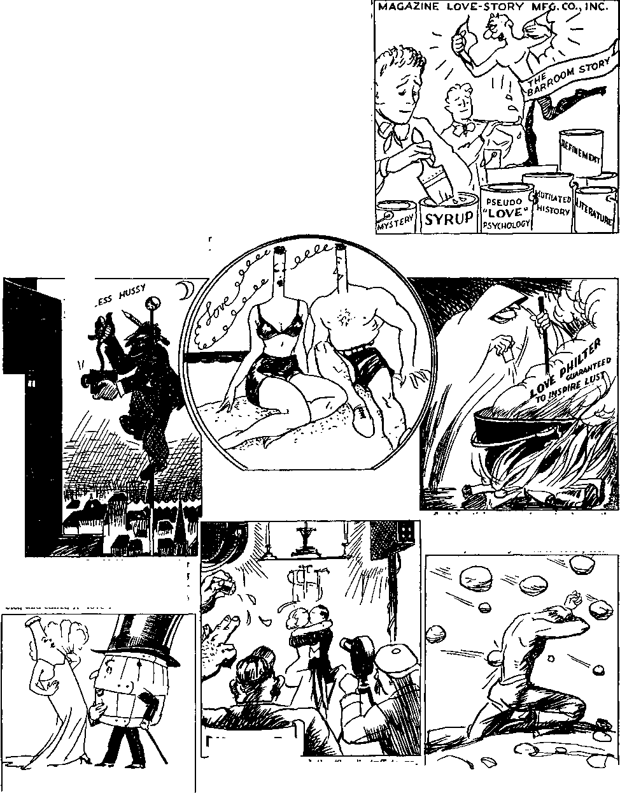

A JOURNAL OF FACT HOPE AND COURAGE
IIIIIIIIIIIIIIIIIIIIIIIIIIIIIIIIIIIIIHIIIIIIIIIIIIIIIIIIIIIIIIIIIIIIIIIIIHIIII
in this issue
A LITTLE BIT ABOUT MAN THAT DELUSION CALLED "LOVE” PERILOUS TIMES
MORE ABOUT HUMANITY DISOBEDIENCE BRINGS LOSS OF THE KINGDOM OF GOD WITNESS MURDERED IN ARGENTINA
iiiiiiiiiiiiiiiiiiiiiiiiiiiiiiiiiiiiiiiiiiiiiiiiiiiiiiiiiiiiiiiiiiiiiiiiiiiiiiii
every other WEDNESDAY
five cents a copy one dollar a year Canada & Foreign 1.25
Vol. XVIII-No. 453 January 27, 1937
CONTENTS
-rug—-- ■-——————-----—————— । . —.g>«»
Composition of the Hand 260 Hands Worth a Fortune
The Interesting Left-Handers 261 Other Strange Manual Exceptions 261 The Beautiful Human Foot 261 The Perfect Foot 262
American Feet Getting Larger 263 Black Mark for Shoe Clerks 264 From Sandals to Shoes
High Heels and Fallen Arches 265 Care of the Feet
Mankind Has Double Brain 266 All People Insane at Times 267 Afraid of Peter Moody’s Brains 267 That Delusion Called “Love” 268
Sinister Side to Sex Attraction 268 The Love of God
An Intensely Practical Problem 268 The Ideal Motive
The “Love” Racket in the United States—Inciting to Lust for a Money Consideration
True Love According to the
Betterment Desperately Resisted
Workers Have to Aid Themselves 276 Lounsberry’s Will
Good Business Being Born 1 of 5
Disobedience Brings Loss of
---———————— ■—---—-————■' --——--
Published every other Wednesday by
GOLDEN AGE PUBLISHING COMPANY, INC.
117 Adams Street, Brooklyn, N. U. S. A.
Clayton J. Woodworth President Nathan H. Knorr Vice President
Charles E. Wagner Secretary and Treasurer
FIVE CENTS A COPY
$1 a year, United States; $1.25 to Canada and all other countries.
Notice to Subscribers
Remittances : For your own safety, remit by postal or express money order. When coin or currency is lost in the ordinary mails, there is no redress. Remittances from countries other than those named below may be made to the Brooklyn office, but only by international postal money order.
Receipt of a new or renewal subscription will be acknowledged only when requested. Notice or expiration is sent with the journal one month before subscription expires. Please renew promptly to avoid loss of copies.
Send change of address direct to us rather than to the post office. Your request should reach-us at least two weeks before the date oF issue with which it is to take effect. Send your old as well as the new address. Copies will not be forwarded by the post office to your new address unless extra postage is provided by you.
Published also in Bohemian, Danish, Dutch, Finnish, French, German, Greek, Japanese, Norwegian, Polish, Spanish, Swedish.
Offices for Other Countries
British 34 Craven Terrace, London, W. 2, England
Canadian 40 Irwin Avenue, Toronto 5, Ontario, Canada
Australasian 7 Beresford Road. Strathfield, N. 3. W., Australia
South African Boston House, Cape Town, South Africa
Entered as second-class matter at Brooklyn, N. Y., under the Act of March 3, 1879.
Volume XVIII Brooklyn, N.Y., Wednesday, January 27, 1937 Number 453
A Little Bit About Man
ARE you not glad, and happy and thankful, that you were horn into the human family, and that you were not a Gibbor? Not long ago the bones of one of the Gibborim, drowned in the Flood, were discovered in Nicaragua. They have been found elsewhere, in France, in Arizona.
The ribs of the Gibbor found in Nicaragua are a yard long and four inches wide, and the shinbone is too heavy for one man to carry. The find was made at El Boquin, on the Mico river. The head was missing. The Gibborim (Hebrew for “mighty men”, in Genesis 6:4) were the children of angels mating with women of the human family, so the Scriptures plainly declare. References to these giants are to be found not only in the Bible, but in the mythology of Greece and Rome and other countries.
Collier's magazine says:
The tallest man in history, according to the record of all authenticated cases, lives today in Bushire, Iran. Although only twenty years of age and still growing, this Persian giant is ten feet six inches in height and weighs 450 pounds. Incidentally, he is so weak that he cannot walk or hold up his head for more than a few minutes at a time.
Goliath’s height was six cubits and a span, which, at 21 inches to the cubit and 9 inches to the span, is 11 feet 3 inches. The Septuagint and Josephus give Goliath’s height as four cubits and a span, or 7 feet 9 inches. Some of the accurately measured giants of the past 1900 years were of the following heights: 10 feet 3 inches, 10 feet 3 inches, 9 feet 4 inches, 7 feet 6 inches, 9 feet 3 inches, 8 feet 6 inches, 8 feet 4 inches, 8 feet 7| inches, 8 feet 2 inches, 8 feet 9 inches, 7 feet 9 inches, and another 7 feet 9 inches. The Gibborim (children of angels and women) who perished in the Flood were very much taller than any of these, as calculations made from portions of their skeletons amply demonstrate, but there are no accurate measurements available.
Robert Wadlow, seventeen-year-old Alton (Ill.) boy, is 8 feet 4 inches in height and still growing. He now weighs over 400 pounds, and seems to be in excellent health.
The proprietor of the department store in Budapest, Hungary, that supplies most of the clothing and furniture for midgets throughout the world estimates that there are 56,000 of these little folks. He himself is but 3 feet 4 inches high.
Men and women are growing taller; northern people are bigger than southern ones; both sexes are much smaller at the hips. These are some of the physical changes in mankind established by thousands of measurements, and are world-wide.
Did you know that you have 17,000 nerves in your spine, some of them twenty times as large in diameter as others? These are all grouped together into what is commonly designated the spinal cord.
It seems incredible that the human arm could be 20,000 times more versatile than the human tongue, yet that is the claim made by Sir Richard Paget, who has been conducting lessons in sign language at the Royal Institution, London. He claims that with one hand alone over 700,000 distinct and elementary signs can be made.
No other living creature can touch each of his fingers with his thumb. The human hand is the instrument of instruments. The manner in which it can be bent forward, backward and sidewise, and the thumb and fingers moved in different ways, calls forth from the reverent heart the most profound awe at the wisdom of the great Creator.
God made man to perform the most intricate and difficult tasks of life; his wife to be a help, suitable to her less exacting sphere. It is no reflection upon the fair sex to record the simple truth that the finest surgical work is done by men.
259
At Sanford, Maine, is a factory for the making of the finest, most costly, most luxurious velvets. The sorters of the Angora goat hair are required to divide it into fifteen diameters of hairs. A single hair misplaced injures seriously the appearance of the finished fabric. The 35 men engaged on the work seldom make a mistake, but they cannot do the work if for any reason they have had a sleepless night. No woman has ever been able to qualify for the job.
In the making of the great dies used to cut out automobile parts the men go over the parts with their calipers and fine files until they have done the very best that can be done with instruments ; but the human hand is finer still, and the last thing done to the die is by the most expert worker of all, who tells by the “feel” of the casting just where another slight abrasion with the file is necessary to make a perfect job.
The fool of an evolutionist cannot explain these things. All he can say is that man “had the good fortune of having a more favorably shaped hand”. You bet he did. And he also had the good fortune to have a grand and glorious Creator that gave it to him. It would serve some of these evolutionists justly if some fine morning they would wake up with monkey claws instead of hands and start to do some real thinking with the fungus growth above their ears.
The hand is composed of twenty-seven bones: eight bones in the wrist, arranged in two rows of four each; five bones forming the palm of the hand; two forming the thumb; and three in each of the four fingers.
Modestly, truthfully, and scientifically, The Encyclopedia Americana says:
The hand, with its highly specialized muscles, belongs to man alone. It cannot be considered, as in the ape, a normal organ of locomotion. It is essentially the organ of touch and prehension. It molds itself to a body to ascertain its form; it comes to the aid of the eye in completing or rectifying its impressions. The functions of touch devolve principally on its anterior or palmar face, the nervous papillae abounding especially at the ends of the fingers. A layer of adipose tissue very close in texture protects, without lessening its power or its delicacy, the network of muscles, vessels and nerves with which this remarkable organ is equipped.1
The hand is an aid to speech. Some talk almost as much with their hands as they do with their tongues. An orchestra leader without arms would be an anomaly. Gestures are much used in motion-picture and in radio studios. The normal conduct of every person can be judged from his handwriting. One votes with the uplifted hand. One asks for the hand of a woman.
Elaine St. Maur, of Hollywood, California, has her hands insured for $150,000. She is much in demand by sculptors and artists who affirm that hers are the most beautiful hands in America. The hands of actresses are almost uniformly beautiful. A woman without long, slender fingers, meticulously cared-for nails, and smooth contours and white skin covering her hands, would find it hard work to secure employment as an actress.
Women’s hands have grown appreciably larger since the World War. Twenty years ago fives and sixes in gloves were much in demand; now the call is for sizes six and one-half to seven and one-half. The enlargement of the feminine hand is charged to automobile driving, tennis and golf.
Women’s hands differ structurally fcom men’s. With men the first finger is shorter than the third finger; with women the first finger is almost always longer than the third finger. This result was obtained by examining the hands of 630 adults. The reason for the difference is not known.
There is no use trying to stop the women who have decided to paint their fingernails. The natural pink tint of the healthy fingernail is attractive.
Women who patronize manicures are advised not to insist upon deeply cut nail corners; this often leads to infection. Hangnails are bothersome and dangerous; frequently they result in abscesses. When first observed they should be snipped off with scissors as closely as possible, and the finger be swathed or at least bathed in antiseptics.
Warts are removed by applying the milk of the common milkweed every day until they dry up and disappear. Yellow spots on the hands of aging persons are like freckles, but are permanent; friction helps some. Small pimples like goose flesh on the arms are removed by rubbing in almond oil, then washing in soap and water and applying cold cream. A lotion of equal parts of glycerin and camphor is good for chapped hands. Hands that are too thin can be built up by massage with pure olive oil, preferably done by a friend.
The Interesting Left-Handers
The lower animals are ambidextrous; those that have “hands” would as soon use one as the other, but the Creator has made man differently. Among men there are a very few that are ambidextrous; the number is negligible. About 97 percent are right-handed; the remaining 3 percent are left-handers, naturally so, and should be let alone to develop as they were designed.
Parents and teachers that have forced or tried to force left-handed children to become righthanded are responsible for causing naturally fine boys and girls to stammer, to misspell, to become irritable, to lie, and to steal. To such children the “q” tends to become a “p”, the “b” to become a “d”, “not” becomes “ton”, and sometimes whole sentences are backwards. More boys than girls are left-handed. The left-handed, if let alone, are in every respect equal to the righthanded.
Left-handedness is hereditary. In families in which one or both of the parents are left-handed 17.34 percent of the children are left-handed, while in families in which neither of the parents is left-handed only 2.1 percent of the children are left-handed; in such latter cases the children inherit from a grandparent.
Instances of dumbness, in children coming in families with a definite left-handed strain, hesitancy, tantrums, pugnacity, seclusiveness, and even criminality, are all traceable to well-meant efforts to make right-handed people out of lefthanded ones. Such persons have their nervous systems upset and their whole development is interfered with. What right has any person, parent or other, to assume the responsibility of slowing up and reversing the mental processes of another? It is easy to understand how a child, forced to do a task in the way hardest for him, may become irritable and unmanageable.
Other Strange Manual Exceptions
There are some people who are without sense of touch, i. e., they are unable to distinguish the shape of an object by handling or touching it, even when the object is perfectly round or square. This odd disability corresponds with that of those who are color-blind or tone-deaf.
Most singular of all the manual exceptions are the inhabitants of Palazuelos, Spain. A great majority of the people in this hamlet have two thumbs on each hand. Most of the men of the village work in stone quarries, and it is conjectured that the great strains put upon their thumbs has had an effect. Intermarriage has spread the peculiarity.
If there is anything in nature more beautiful, or better adapted to its purpose, than a baby’s foot, name it. After a few decades of mistreatment by its owner the foot can lose most of its charming appearance, and usually does, but it is still a marvelous mechanism, supple and adaptable, built to carry 200 pounds or more cheerfully, for a lifetime.
There are twenty-six bones in the foot, some long and placed parallel, others cuboid in shape, at the ankle, all lashed together by flexible cords, built up into arches, four in number, running lengthwise and crosswise, and enabling the owner to make his way over terrain of every description. The bony structure is in three divisions, commonly called ankle, instep, and toes, but if more aristocratic-sounding names are desired, the three divisions may be called tarsus, metatarsus, and phalanges.
Persons who have never abused their feet, and who have trained them, dance for hours on end without fatigue, run marathons, walk 100 miles in a day, and do other seemingly incredible things with these instruments that can be bent, twisted and turned and yet always come back to their normal shape and position if given a chance. There are more than 100 ligaments in the foot. The endless muscles play over one another in perfect harmony.
Occasionally, at athletic meets, one senses the marvels of the human foot when he sees a two-hundred-pound man throw himself some six feet in the air or leap some twenty-five feet in a running broad jump. Those arches, tendons and muscles were all designed with exquisite care to permit the owner to walk, run and jump with ease and grace. The arches give spring to the motions of the body; they act as shock absorbers; and nerves and blood vessels are stowed away under them, in the safest and best place.
The perfect foot must have toes. They are essential for maintaining the balance; and while one could imagine it possible to hobble about without them, they are absolutely essential for easy walking, or for running, dancing, cycling, football, tennis, baseball, golf or other athletic games. And if toes are essential, perfect toes are essential; they need to be kept in the condition in which they were when the owner came into the world.
The experts say that the perfect foot should be exactly one-seventh of its owner’s height. Thus a man five feet ten inches tall would have a foot exactly ten inches long; but, trying it out on three specimens in the office, all had bigger feet than they were supposed to have, and it may be doubted if the experts have it just right.2 They also say that the perfect foot should be three times as long as its greatest breadth. This seems to be correct.
A big shoe company uses 79 different lasts. This shows that there is a great difference in sizes and shapes of feet; and if there are some perfect ones there are many times that number that are just a little off standard.
Beauticians claim that a man is judged by his feet and neckties, and a woman by her feet and face. It would certainly seem that a man seeking a job would do well to shine his shoes and have on a clean necktie, and if a shine and a clean tie are good to get a job they are good to keep it. An employee cannot afford to have an employer form the opinion that his mind is untidy. If a girl’s shoes need a shine she might just as well not powder her nose; for her shoes will be noticed before her nose will.
‘The slipping of the foot,’ ‘the stumbling of the foot, ‘footsteps’ and ‘from head to foot’ are Scriptural expressions which require no explanation. To be ‘‘under one’s foot” refers to the ancient custom of conquerors’ putting their feet on the necks of their future servants, as is mentioned in Joshua 10: 24, and shown on the monuments of Egypt, Persia and Rome.
The Hebrew language is so extremely modest that the word feet is made to stand for parts and acts which are unnamed; hence such phrases as “hair of the feet”, ‘water of the feet,’ ‘between the feet,’ to ‘open the feet’ and to ‘cover the feet’.
Nakedness of feet in public was a sign of mourning or humility. Moses removed his sandals in the presence of God. The priests served with bare feet both in the tabernacle and in the temple.
Where Paul says he was brought up at the feet of Gamaliel he stated the exact truth. In ancient law schools the teacher sat on a raised seat, but the pupils were seated on the floor at his feet. The picture persists in the modern courtroom, where the judge sits on a dais.
In Galatians 2:14, where the apostle says he saw that they walked “not uprightly”, the literal wording is “not with a straight foot”. Peter and others “did not foot it straightly”; i.e., they were crooked, in a measure, walking disorderly, and came in for just reproof. Seems too bad that Peter did not say something about watching your feet; maybe he could have helped his alleged successors to avoid having kings and other self-seekers kiss their feet.
Justin was the first emperor to kiss a pope’s foot, A.D. 525. But Diocletian, Roman emperor, had his courtiers kissing his foot 225 years earlier. He had gems fastened to his shoes to coax the poor sycophants to bestow this honor (?) the more willingly. Every new cardinal has to kiss the pope’s foot, and every time one of their number is made pope they all kiss his foot. At public audiences persons presented to the pope (if they are Roman Catholics) kiss his foot to indicate that they hold him to be the vicar of Christ. Jesus never asked anybody to kiss His feet; Mary’s act was spontaneous and beautiful, not planned and required.
To learn to stand, get a pole the height of your body; stand sidewise in front of the mirror; the top of the pole should come back of the ear; the bottom should be in the middle of the foot, where the instep runs into the ankle; the middle of the pole should be in the exact center of the hip; the abdomen should be held in; the back has a shallow bend in the center; the knees protrude slightly forward of the pole; the lower leg to the ankle comes back of the pole; the head should be level; the chest begins right below the chin. After one has learned to stand properly, one can learn to walk properly by walking around the room without the pole and then come back and see if the correct posture has been retained.
When standing it should be easy to put three fingers under the inside of either foot, beneath the largest arch. The body is really supported by a tripod at the end of each leg.
If people are going to stand they must have legs. Sir Arbuthnot Lane, English surgeon, made the statement that American girls have the most perfect legs in the world. How he dared go back home, after making a statement like that, is an unsolved mystery. La Argentina, famous Spanish dancer, agreed with Dr. Lane.
But a committee of the University of Missouri scanned 100 pairs of feminine legs on the street and voted that only five pairs were good-looking, thirty-nine pairs would do, and the remaining fifty-six pairs were impossible. Needless to say this committee remains nameless, but secure.
Dr. Hillman, New York osteopath, more courageous, says he has looked at thousands of legs, and out of every ten pairs six are lopsided, because one leg is shorter than the other. That is the reason why persons that are lost, unless they have some visible objective, usually travel in circles. Many lives have been lost due to this fact. A person blindfolded can learn to walk straight forward only after long practice.
Explaining the act of walking Dr. L. M. Shakesby, osteopath, says:
The act of walking brings into play all the functions of the foot. As the heel is laid to the ground, the foot should be relaxed. The burden which it carries is then distributed unconsciously from the heel to the outer side of the foot, and then across the ball of the foot to the big toe. The step is then completed by means of the broad hinge represented by all the toes.
When standing, the weight of the body should be transmitted down the legs to the heels, along the outer sides of the feet to the balls of the little toes, and then across the ball of the foot to the ball of the big toe; the inner long arches bearing only a portion of the weight.
The United States Department of Agriculture has done a good work in trying to show farm women that there is a correct posture for dishwashing, mopping, handling foods in the oven, sitting to prepare vegetables, etc. Posture is habit, and habit is health or illness. Poor posture means fatigue, backache, strain on the wrong parts of the body, narrow chest, round shoulders, protruding abdomen, bodily distortions and unattractive appearance.
Animals walk barefoot, and walk gracefully. Boys and girls are animals, and when they walk barefoot they walk gracefully. A grown-up who does not enjoy walking barefoot in the sand or on the grass is ready for his showcase. Some people are such slaves to the automobile that they hardly know how to walk. There is a great increase in leg and ankle injuries because young people use the automobile too much.
A party of 24 South Sea islanders went on a sightseeing trip to Japan. They had theretofore always walked barefoot, but were talked into buying shoes. The shoes stayed on only a few blocks; after that they came off and stayed off all the while the party was in the country. Lasts used in making shoes for Americans cannot be used for making shoes for the Filipinos; the latter have been accustomed to bare feet for centuries and their feet are more nearly natural.
The correct way to walk is to carry the chest high, keep the chin level, and swing the arms and legs freely. Inhale seven steps and exhale seven steps.
It is a matter of record that most of the long walkers, like Weston and O’Leary, lived to a good old age. Daniel O’Leary died at 90 years of age, having walked in his lifetime well over 300,000 miles, 125,000 of which was in competition. At 66 years of age he walked a mile at the beginning of each hour for 1,000 consecutive hours, perhaps the only time it was ever done. Up until then physicians had considered such a feat impossible.
Experienced shoemen say that a shoe expert can tell at a glance if a woman is French, English or American. If French, her feet are short and broad; if English, longer and narrower; and if American, so much narrower that she can with difficulty be fitted with an English shoe. American widths are AAA, AA, A, B, C, D, and E. British widths begin with C, which they call width “3”.
American feet are getting larger; they should. A European woman entering the films at Hollywood heralded her entry by insuring her feet for $100,000 and announcing that she wears size No. 1 shoes and has the smallest feet of any white woman. The lady is mistaken. Up to ten years ago ladies’ No. 1 shoes could be regularly obtained in America; now they are very hard to get. A lady like one little lady in mind, who has a No. 1 foot, can still get all kinds of promises from shoe dealers everywhere, but when the shoes finally come forth from their hiding places they are 1%, 2, 2^, or even 3. If anybody knows where ladies’ No. 1 shoes may now be obtained, be so good as to send a postal card to the editor of The. Golden Age and supply the information.
There is no advantage in having very small feet; there is a decided disadvantage. Anyway^ according to the dealers, athletics in ten short years have given American women feet half an inch longer and a full size wider. It is to their well-being all round. The ideal of Chinese women of a generation ago, to hobble around in shoes as small as possible, is not and should not be the ideal of a sensible woman now. In the Victorian era it was considered improper for a lady to show her foot; now she shows everything and nobody thinks anything of it.
Some firms now advertise men’s shoes up to size 14 or 15, and women’s shoes up to sizes 11 and 12. The trend toward larger shoes is so definite that sevens and eights for women are common, especially among the younger ones; so the saying has come about, “An inch on the shoe, a year off the age.” Women of good height are, as a matter of course, expected to have good, generous feet. It is noteworthy that ancient statuary of women all shows them with large feet. The average woman today takes a 5 or 6; size 4-B is in the minority; very few size 3 are sold at all, and smaller sizes seem almost impossible to obtain.
Tally a black mark against the shoe clerks. It is their business to know that a person sitting takes a shoe two sizes smaller than one standing, yet they have persisted in fitting the customer to the smaller shoes, as if they were to sit forever. Put another black mark against them for looking at your shoes when you come into the store and mentally determining that by no possible chance will they give you a larger shoe, but that they will squeeze it down at least one size smaller, if such a thing is at all possible. They have a lot to answer for.
Shoes too small give corns, calluses, pains in the leg, fatigue, headache, and fine lines of pain clear around the eyes. Seventy-five percent of high-school girls acquire lifelong foot troubles in their high-school days because the shoe clerks catered to their vanity instead of really trying to fit them properly. And the girls were partly to blame, too. Nearly all children are born with perfect feet. Why ruin them with wrong shoes?
Shoes must be wide enough and long enough to bear a load when their possessor is on his feet. When army recruits are fitted with shoes they are first given the full weight of equipment they must carry; then they have to stand with the weight thrown forward on the ball of the foot while it is measured. Uncle Sam is not taking any chances of a rookie’s traveling around in shoes that are too small for him.
It is quite a jump from a pair of sandals that were each made of a single piece of leather to a modern pair of shoes that requires 26 pieces of leather, 14 pieces of cloth, 28 nails, 80 tacks, 2 tips, 2 heels, 2 box toes, 2 steel shanks, and 20 yards of thread, and the services of 57 operators, on 42 machines. The record for a pair of the latter is 13 minutes from the time the shot was fired. It probably took a long time to cut out the first pair of sandals. How would you go about it if you had neither knife nor shears ?
There is not so much to be said in favor of sandals. They kept out neither rain, mud nor dust. The Japanese and Chinese still wear them. They are sometimes ornamented with lines of gold, silver or silk and embroidered with jewels. The oriental sock has a separate compartment for the great toe, so that it may be inserted under the strap of the sandal.
On the walls of Egyptian temples are paintings of the different steps in the making of footwear, from the tanning of the leather to the finished sandal. By the time of the Roman empire there were shoes with nails in them. Josephus mentions that the centurion Julian slipped on the marble pavement of the temple from “his shoes being full of nails”, and was killed thereby.
The currying knife, awl, lapstone and other tools of the Egyptian sandal-maker are still to be found in the cobbling shops of the West. Sandals were made of woven palm leaves and papyrus stalks as well as of leather, and are still so made in China. In the latter country the merchants and other so-called “higher classes” still wear the loose, thick-soled, quilted slippers often seen in Chinese shops in American cities.
The Greeks first made the shoe, while the Romans first made the sock. High-top boots faced with metal were worn by the Roman soldiers and have survived in the military puttees of the present uncivilized era. In Russia and the Balkan states high and heavy boots are needed and used by both men and women. In Holland, Belgium, France and Germany wooden shoes (sabots, klompen), or leather shoes with wooden soles, are much worn by the laboring classes. These shoes are admirably adapted to dairies and other damp places. In parts of Spain sandals, slippers and shoes are made of esparto grass, light in weight, and wearing for a generation. Esparto grass has the faculty of gathering, holding and using fine pebbles, which become, in fact, the sole of the shoe.
The first shoes made by the Greeks had the appearance of the Indian moccasin. Shoes, in the modern sense, made their appearance about the time of the Crusades. In the reign of Richard II of England it was customary to have boots of different color for each leg, without heels, and with toes so long that they were frequently attached to the knees.
In 1857 the McKay sewing machine made possible the mechanical sewing of the outer sole to the inner sole (the edges of the upper being between the two) with a strong chain stitch, a channel or furrow being cut in the outsole to protect the part of the thread extending to the bottom. Prior to that time shoes could be made only by hand; now they are all machine-sewed, the production in the United States being up to 350,000,000 pairs per year.
Footwear is preserved by the application of neat’s foot, cod and castor oils, tallow and wool grease, or mixtures of these, and is ruined by being kept either wet or dry. Annoying and painful foot eruptions have been traced to the effect of the chemicals used in fashioning of tan shoe leather.
The use of high heels has its advocates among physicians, and it has opponents too. The claim is made that 75 percent of American university girls have menstrual troubles, cramps, hemorrhages, headaches, backaches, etc., and that this comes from high-heeled shoes. The relative position of the spine and the body cannot be interfered with without disturbing the lower abdominal organs. At least one physician who recommends moderately high heels for women makes the admission that if the heel is not so fixed on the shoe as to bring it well under the toot, it may cause fallen arches; and that a great many cheap shoes suffer from this defect.
Shoes have been made to sell; the shape and especially the mechanism of the human foot have not been studied; and as a result about half of the children suffer from flatfoot, or have a disposition thereto, while about 70 percent of the population as a whole are affected.
The North American Indians who still wear moccasins are never troubled with fallen arches or flat feet; which shows that the shoemakers have a lot to answer for. Formerly there were twice as many men afflicted with fallen arches as women; now the conditions are nearly reversed ; men’s shoes have become more-sensible; women’s, less so.
It is rare to find men’s boots or shoes with a heel higher than one inch, which, assuming the sole to be half an inch thick, gives a lift to the heel of only half an inch. Women’s, heels are seldom less than two inches high, while the sole is but about a quarter of an inch thick. Some women have heels as high as four inches; the feet are not properly supported at the critical point, which is just at the front of the heel, and the arches give way.
Some who had fallen arches, and abandoned high-heeled shoes, found their feet return to normal. People that are much on their feet, as waiters, bakers, dentists, barbers, housewives, need shoes that are not too short, not too narrow, not too high-heeled, and that do not require to be laced tight across the instep. Shoes for such workers should also fit the bottom of the feet, and not be as flat as a board, as are most shoes. It takes a large amount of so-called “medical science” to get the shoemakers to use lasts that, on their lower sides, are shaped to the contour of the foot.
Various remedies are offered for lifting the arches, once they have fallen. But the first remedy is to get the right kind of shoes. Arch supports can be had, some of them air-cushioned. Walking and standing Indian-fashion and bending the toes forward when in bed are recommended.
Health, Culture magazine recommends the following method for lifting arches:
Obtain a roll of ^-inch-wide zinc oxide adhesive plaster about 6 yards long; place the feet with the toes pointing inward. The first strap is commenced from the outer ankle bone, taken under the foot and then up the inner side of the leg as far as the lower part of the calf. The second begins at the same place, but about one inch farther forward, the strap overlapping about half an inch. This one passes under the foot in the same way as the first strap, but then up over the instep to the outer side of the leg, and wound spirally around the leg. A third strap is placed around the leg, just above the ankle, to further secure the first and second straps. Every third night remove the straps carefully, bathe the feet in salt water, and dry thoroughly. Leave straps off for one day and one night, and then re-apply as before. It must be borne in mind that at each application of strapping, the straps are drawn up tighter, thus lifting the arch.
If shoes are too small or hose are too short the result may be hammertoes, thickened toenails, or corns. Corns are also produced by having shoes too large. They are mentioned in literature written 200 B.C.
For an excellent article on the care of the feet, see the contribution on that subject from the pen of R. S. Nester, chiropodist, published in The Golden Age of March 2,1932.
Other suggestions are that cold feet may be helped by plunging them first in very hot, then in very cold water, for two minutes at a time, back and forth three times in each. Massage is also recommended for this.
Daily bathing of the feet in either tepid or cold water is an excellent habit. Socks should be changed frequently, as often as possible, and preferably should be white in color, so as to avoid coloring matter in a place where it is susceptible of doing much harm.
A strong solution of tannic acid is said to be a splendid remedy for tender feet and for unpleasant odors arising from perspiration of the feet.
Soft corns are helped by scraping a piece of common chalk, putting it on the corn, and binding a rag on it. To get rid of hard corns soak the feet half an hour (no less) in water hot as can be borne, when the corn can be taken off in layers.
It is a good plan to change the shoes frequently.
Many have wondered why humans ordinarily use but one half of their brains, the other half remaining apparently idle. Occasionally an incident occurs that shows the wisdom of the great Creator in this regard. Thus, in Port Clinton, Ohio, an eleven-year-old boy was accidentally shot by his brother. The bullet entered the left lobe of his brain and split into six pieces. The boy must have been right-handed, because right-handed people always use the left lobe of their brain. After the boy was shot he lost his ability to talk and reason, but is now learning again to read and write and is able to remember much of what he previously learned in school. His complete recovery is anticipated. He is probably now using the right lobe of his brain, and when fully recovered is liable to be left-handed or ambidextrous. The human organism is the most marvelous of God’s mundane creation, fearfully and wonderfully made. The man who says “There is no God” is in much worse condition than this boy who had half his brain destroyed.
In the effort to do something that would bring dishonor to the Creator, certain so-called “scientists” contended that some brains of the darker races have what they termed “ape-like ridges”. These ridges were supposed to show the humbler origin of the Negritic races. But now the Bekhteroff Institute of the Brain, of Leningrad, Russia, has made critical examinations of more than 500 brains and found that these “ape-like ridges” are as common among white scientists as they are among Negroes; and so that ends that.
Several types of lie detectors are in use: the polygraph, which indicates increased blood pressure when a lie is being told; the psychogalvanometer, which measures the increase in perspiration; the mirror-confession chamber, in which the suspect is surrounded by mirrors and questioned through a crack. As he answers the colors of the lights are changed. The pneumograph registers quickened breathing. The oscillograph takes pictures of the sweat glands in operation. Scopolamin is a drug, a serum, which so affects the brain as to leave it incapable of manufacturing lies until the power of the drug has worn off.
Said John Randolph Stidman, in Baltimore Evening Sun:
A professor recently announced that all people are insane at times. A survey of the incomprehensible antics of the human race leads one to conclude that he is right.
Hitler urges his legions toward oblivion. Prating of glory and honor, he smashes a treaty because, he asserts, France has violated another one.
Mussolini wastes national substance and Italian blood in a conquest which will benefit him little. The League of Nations taps him lightly on the wrist.
France’s leaders rush around like frightened rabbits, yelling to England for help, who does nothing. France reaches out a friendly hand to Russia.
Japan stretches a ruthless arm into China. Oh, no, not for conquest! Just to chastise the Chinese bandits. Her statesmen announce blandly that there will be no war in Asia.
All the proud nations prate of national honor and default to a country that drew a horrible war to an end for them. They tell you that they desire only peace, yet are spending vast sums for armament.
In our own country clowns cavort in Congress, in courts of justice, in governors’ seats, in editorial chairs and over the radio. . . . The one clear, refreshing note comes from the youth of the nation in the satiric suggestion of the organization of the Veterans of Future Wars. It is almost a call to common sense, as insanity marches on.
step. Moody, Wofford, S.C., college student, wrote a skit “To the Cotton Mill Worker” which was published in the college journal. It gave such evidences of brains that the South Carolina House of Representatives ordered a psychiatrist to examine the young man and see if it was really so. The Augusta Chronicle contained a picture of “Reverend” S. P. Chapman, York county clergyman, who said he would like to kick Mr. Moody for writing the following:
Your shoulders are humped and your head is bent; your dull dead eyes are spiritless and your mouth is just a hard straight line in a yellow face under the blue lights in the mill.
You are diseased and unhealthy looking, standing there in your faded overalls, with one suspender loose. Your voice is cracked and your throat and lungs are lined with cotton.
Every night the whistle blows and you plod home to swallow your bread and beans, comb the cotton from your straggly gray hair, wash your wrinkled face, and then lie down on your hard, unclean mattress until the whistle’s blast calls you back to your machine in the mill.
In these close, four-room green and yellow houses, filled with soot from the mill’s smokestack and dust from the road, you breed countless children, dirty and ill-fed, who will grow up and take your place in the cotton mill.
You are narrow-minded and ignorant, you with your six years of schooling. And you are afraid, afraid of your bosses, afraid of being laid off. You are desperately frightened by knowledge. Therefore you shun it, and are content to stay a coward.
Recreation for you is in talking baseball and in seeing, on Saturday nights, some cheap western movie full of guns and ropes and horses and fights. And your pleasure is wasting your nickels in the drug store slot machine.
On your day off, dressed in your shiny cheap suit and dingy white shirt, you come down to the village square and sit in the sun in front of the company store and spit tobacco juice on the sidewalk from between your decaying yellow teeth. You gossip with other factory bucks, and miss the clamor of the mill.
You join a union and pay your dues. And you attend meetings where loud-mouthed bunk-shooters shout lies at you and yell against the stretch-out, and tell you that if you strike and lose your jobs you will no longer be poverty-stricken. And you believe them. These mealy-mouthed hypocrites tell you that you are the salt of the earth and the bulwark of the nation, and then grab your dollar contributions “to the cause” and then put it in their pockets while your children go without shoes.
On Sundays you put on your red tie and go to church with your consumptive wife, and while she goes in and sits on the left side of the narrow wooden church, you stand outside, you and your cronies, and spit tobacco juice. And then you go in and sit down on the right side, away from your wife. You hear the preacher speak of Christian living and high ideals. What do you know about high ideals, you broken $16-a-week mill hand ?
Listen, you lint-head, you are just another poor, illiterate, cotton-mill worker. You stand with a thousand others just like you for five days a week, eight hours a day, running and watching and nursing and tending a power loom, all for 40 cents an hour. What do you know about life? What do you know about music? What do you know about art or literature? What do you know about “love”? What eould you know about anything? You are dead! You died on your 16th birthday, when you went to work in the cotton mill.
That Delusion Called “Love
"OVERTONE knows that a very high percent-■“ age of all fiction stories, motion picture features and popular songs have what are termed “love stories” as their principal theme. Nor is there any great cause for wonder that this class of mental pabulum finds at all times an unfailing market. With perhaps one exception, nothing in all human experience produces the ecstasy that is felt by two of the opposite sex who are deeply “in Itfve” with each other. Then, too, it is quite commonly believed that whatever expediency may dictate as a motive for marriage, such as monetary, social or other material advantage, the ideal motive, the one that may be expected to produce the greatest happiness, is “love”.
To mankind in general, a “love match” seems to hold out the promise that the happy couple will, as the stories have it, “live happily ever after.” With this implication story and picture are brought to a close, leaving the “lovers” in each other’s arms.
But, say the Scriptures, “man looketh upon the outward appearance,” and the outward appearance quite commonly misrepresents the actual facts. What a bonnie sight the soldier hoys present as they march along the streets on parade, with their trim uniforms, orderly step, flying colors and bands playing such stirring music that even indifferent civilians will sometimes straighten the stooped shoulders and pick up the dragging step. But what becomes of this gay picture when these same lads face their fellows in mortal combat and slaughter? Thus it is with that which is so universally accepted as ‘love”.
There is a sinister side to this ‘love” such as it would seem is surpassed only by that which is revealed in the horrors of war. First of all, this “love” creates an illusion of desirable qualities in its object that are more or less unde-finable, and, as a matter of fact, do not really exist. Then it glosses over undesirable qualities that ought to be perfectly obvious. It is soft in speech and seemingly tender and considerate in action. “Love” is a past master in window dressing, and presents an exceedingly attractive front.
But what do we find stored up in the vast warehouse of Fact that lies back of this charm-
” (Contributed)
ing exterior? Innumerable murders perpetrated for “love”. Hosts of suicides committed because of unrequited or departed “love”. Infidelities and divorces brought about because of “love” for some other man or woman. Note the multitude of petty tyrannies exercised by “loved” ones over their “lovers”, the disappointments, the hatreds, the jealousies, and the unrest in absence. Last, but not least, note the fact that “love” has even changed the course of nations.
Now, then, in the light of the foregoing, can it possibly be true that the “love” which is at the foundation of these evils is the ideal motive for marriage, or that it is of God, a blessing from the Creator to His creature man, or to members of His new creation the remnant? Can it indeed be rightly said that such is properly called love at all? If not, what should it be called? Then, again, should this that is called “love” be sought or shunned? should it be welcomed or repelled?
Before attempting to answer these questions, it is strongly urged upon all readers of this article to endeavor to secure the opportunity of hearing the electrical transcription of a lecture by Judge Rutherford entitled “Love”. Hear it two or three times if possible, and weigh every word. Its importance cannot be overrated. It may well be likened to an unfailing antidote for the poison of a deadly serpent. The lecture appears in print in the booklet The Crisis.
The Scriptures assert that God is love. It is manifest therefore that the name of God is involved in the questions which have just been propounded. We shall certainly therefore be able to learn from the Scriptures that which will enable us to reach a proper conclusion as to the correct answer to. these questions.
But just how is the name of God involved in this matter? In this way: As already intimated, the Scriptures emphasize the tremendous importance of love, in setting before all creation the fact that love is so prominent a quality of Jehovah as that it is placed on record that “God is love”. The only “love” that hosts upon hosts of humanity have any substantial knowledge of is that which most of them experience at some time, or other and which is ceaselessly depicted to them day in and day out in a deluge of pictures and stories with one or more concomitants of murder, suicide, jealousies, tyrannies, criminations and recriminations, infidelities, desertions or divorces. Whether intelligently realized or not, this so-called “love” has surely brought profound reproach upon the holy name of Him who is LOVE.
Coming then to the consideration of the several questions raised in a preceding paragraph, we will address ourselves to the first, which is, “Is ‘love’ the ideal basis for entering marriage ?”
No one who has any reverence for the testimony of the Bible will decline to consider relative facts therein recorded bearing upon this and the other questions set forth. While it is true there were variations in the manner of acquiring a wife, even amongst God’s typical people Israel, this does not alter or prevent us from learning what Jehovah’s original purpose was. "When Jesus was on earth the Pharisees, trying to trap Him, asked Him some questions regarding the marriage relationship; then, thinking to corner Him in respect to a statement He had made, put a final question to Him regarding the law as given by Moses. They said, ‘Why did Moses then command to give a bill of divorcement, and to put her away?’ He said to them, “Moses, because of the hardness of your hearts, suffered you to put away your wives: but from the beginning it was not so"
So, then, we need not concern ourselves regarding the variations in the way that a wife was acquired in olden days, but go right back of these to what it was in the beginning.
How did Adam acquire his wife ? Did God take the rib of Adam and make a number of different women therefrom and then wait to see which Adam would fall in “love” with to make her his wife? No, He did not. Could God have done this ? Surely He could. Instead, however, God made just one woman and gave her to Adam for his wife, and Adam took what he was given, and Eve perforce likewise.
Now Adam, we are told, was a son of God. Therefore it may be laid down that the manner of acquiring a wife in the beginning was by Paternal provision. No courting? No “lovemaking” before marriage? None.
This method was also followed in the case of Isaac. Abraham sent his servant to his own country to secure a wife for Isaac, and Isaac accepted the choice without question, and Rebecca without having seen Isaac.
It goes without question, of course, that as created and provided, Eve was perfectly compatible with Adam in every respect. It is also no doubt true that even though there should be normal variations among perfect humans as characters, perfect fathers would have no difficulty in selecting in the spirit of the Lord suitable wives for their sons.
Concisely, then, it may be set down that “love” so called is not the ideal motive for marriage. In other words, it is not the natural way for a man to acquire a wife.
We come now to the second question, “Is ‘love’ (commonly so called) of God, a blessing to His creature man ?”
The writer of this article has profound reason for being very compassionate and sympathetic toward those reading it who are “in love” with some member of the opposite sex. Sensitive and on the defensive they usually are, yet greatly in need of light upon their experience. Such will no doubt seek to assure themselves and each other by reference to the ecstasies that associate with their mutual regard, and to the amiable arid seemingly admirable qualities manifested by their object. But the addict of opium also experiences ecstasies while under the influence of the drug, and there are those who display great generosity and other pleasing qualities after imbibing too freely in alcoholic beverages. Would any sane person claim that the condition of these two classes of persons is a blessing from the Lbrd? In both of these cases, the individuals are not themselves, the powers of reason and moral responsibility are temporarily disturbed and unbalanced by the drug or stimulant used, and the consequences of such disturbance, being unnatural, are almost invariably evil. Putting this in other words, abnormal action is inevitably followed by abnormal reaction. Now, if “love” were indeed a blessing from the Lord, no abnormal reaction would result from it, for the Scriptures definitely state, “The blessing of the Lord, it maketh rich; and he addeth no sorrow with it.” There is no “morning after the night before” coupled with His blessings. By their normal and reasonable action they produce only normal and reasonable reaction, free from sorrow, regret, bitterness, disappointments, etc.
Not so, however, with that which is called “love”. Universal history, observation and ex-
The “Love” Racket in the United States—Inciting to Lust for a Money Consideration
FOR I'M FALLING IN LUST WITH SOMEONE
3. The modern magazine adopted the “lovo story” (based on Mariolatry) to induce its readers to page through the ads.
I. Satan, the wily foe of man, induced the clergy (they are induced so easily) to magnify human passion and give it precedence over love for God, and to tax it, deriving from it wealth, power, pomp and free advertising.
2. Modern song writers soon discovered the potential wealth in giving voice to the baser passions under the label of “L-O-V-E”,
T^eI.
4. Newspapers and tabloids were not far behind in discovering the value of prying into private lives and salaciously emphasized the “love nest” theme, the perverse, etc., and called it “love”.
DIRECTOR
7. The alcoholic interests advertised "love”, too —bottled or begged.
5. Cigarette manufacturers enlarged and concentrated on the baser side of human relations and pictorially offer its victims all the delights of an imagined seraglio.
8. The movies exalted the ‘love” stuff to undreamed-of heights of luxury and lasciviousness. Censorship was promised by a politicoreligious organization, so the “lust” scenes are now taken under the eye of a certain “church” and that makes it O.K.
6. Advertising agencies struck another chord in its blurbs about the girl that had “dishpan hands”, body odor, halitosis, poor corsets, etc. They called it "love”, too.
9. By constant reiteration of a lie, these businesses have corrupted the public mind, forced upon it an unchristian and blasphemous meaning to the word “love” and thus brought real love into contempt and shame.
True Love According to the Word of Jehovah
perience record the shocking and dreadful reactions manifested by “lovers” in all times, ages, and countries.
We may properly conclude, then, that “love” so called is not a blessing from the Lord, since it works injury to His creatures and brings great reproach upon His name.
The next question before us is, “Can this so-called ‘love’ be properly called love at all? and if not, what should it be called ?”
From what has been set forth in the foregoing paragraphs, it will be fairly evident that the state or feeling universally considered as love is not love at all. This conclusion is established beyond question in the electrically transcribed lecture by Judge Rutherford on “Love”, to which reference has already been made in this article and which the readers are again urged to take steps to secure the privilege of hearing.
In addressing ourselves to the consideration of the second part of the foregoing question, “What should it be called?” we approach what is perhaps the most painful and humiliating phase of this subject, and yet the most salutary, since to face the facts stripped of the glamour of romance with which the archenemy has undoubtedly clothed them is to be furnished the help to deal with those facts as they exist or impend, or become a possibility in our own lives, in a way that becomes those who are consecrated to do the will of God.
Before designating this state or feeling called “love” by its more appropriate name, let us see it for what it is: an abnormal manifestation of a preliminary phase of the procreative instinct common to all animals, of which man is the highest form. This preliminary phase, which is manifested by some of the lower animals, cats, for instance, in amorous sounds and movements, is elaborated in the human male and female, subjecting to itself, as it does, the moral, intellectual and social faculties as accessories to its expression, and manifests itself in tender looks, clasped hands, close bodily proximity, hugs, kisses and extravagant professions of endearment and regard.
Sex Desire Is Not Love
This preliminary phase does not contain the element of craving for sexual intercourse, but no matter how long it may persist, even if so be for years, unless aborted or thwarted, it finds its consummation only in the second phase of the procreative instinct, that of craving for sexual intercourse with its object.
So, then, stripped of all its glamour, what do we find instead of love? We find “desire”, in many cases so strong as to be properly termed “lust”. Popular “love”, then, is nothing more nor less than desire or lust for possession as distinct from desire or lust for consummation, into which the former is extended in due course.
Love as set forth in the Scriptures is the perfect expression of unselfishness. It is manifest, then, that “desire for possession” is a definitely selfish sentiment, even though at times it appears to display self-abnegation. Moreover, it is extremely self-centered; its expectations, its hopes, its gains, its losses, are of tremendous consequence. No matter how serious they may be, the affairs and happenings amongst their fellows about them are as nothing compared to the mutual interests of the “lovers”.
Surely, then, in the light of what we have hereinbefore noted, this so-called “love” should be shunned rather than sought. To avoid it, however, is not easy; as, like other snares of Satan, it is brought about very subtly. Frequent contact and association with those of the opposite sex is generally a matter of necessity with those who are engaged in a common service. For them to avoid the entanglements and servile bondage of “love” (desire for possession), it would be wise to avoid anything in the nature of personal confidences or intimacies with associates of the opposite sex, no matter how seemingly innocent those confidences or intimacies might be.
While, as the Scriptures plainly set forth, marriage is an institution of Jehovah God, the apostle Paul under inspiration of the spirit of God makes it evident that with the Devil and his organization rampant in the earth, God’s consecrated people do well to refrain from marriage unless they find themselves continually tormented with desire for sexual intercourse, in which case they should marry. For those of the younger or older who have need to marry on this score, let them dispose of the matter in candor and honesty, so far as possible along the line of the original divine institution, shunning the blight, the delusions and illusions of “love” so called and “courtship”, which bring reproach upon the holy name of Jehovah.
A five-minute talk
by Judge Rutherford
DURING the past few years times have been more perilous than ever before. Cyclones, earthquakes and distress afflict the people everywhere. What is the reason? The Bible gives the full and satisfactory answer to the question. At 2 Timothy, third chapter, it is written: “This know also, that in the last days perilous times shall come.’' What is meant by the words “the last days” as there used? The meaning is, the last days of the existence of Satan’s rule on earth. In further proof of this: Jesus was asked by the disciples what would be the evidence of Satan’s uninterrupted rule of the world; and He answered, in part, ‘World war, famines, pestilences, earthquakes, great distress and perplexity upon the people.’ That uninterrupted rule of Satan came to an end in 1914, and the World War followed, and the distress has increased since. The Devil knows that there is only a short time now until the great battle of Armageddon will be fought, in which his power will be completely destroyed, and he is now endeavoring to bring all woe possible upon the people to turn them away from God and into destruction.
What effect is Satan’s wicked influence having upon men in these last days ? The Scriptures answer (2 Timothy 3: 2-5): “For men shall be lovers of their own selves, covetous, boasters, proud, blasphemers, disobedient to parents, unthankful, unholy, without natural affection, trucebreakers, false accusers, incontinent, fierce, despisers of those that are good, traitors, heady, highminded, lovers of pleasures more than lovers of God; having a form of godliness, but denying the power thereof: from such turn away.”
The conditions now prevalent exactly fit the prophecy, thus showing its fulfillment. Any person who is diligently obeying the commandments of God is doing good. Some men and women are going about calling the attention of the people to the truth of God’s kingdom, and are thus doing good. Religious organizations, ruled by selfish men as above stated in the scripture, are now false accusers and despisers of those who are doing good. Such selfish ones are under the influence of Satan and falsely accuse Jehovah’s witnesses of wrongdoing and despise them because they are telling the people the truth about God’s provision for their blessing. Further describing those evildoers so manifest in these last days the scripture says, they are “heady, highminded, lovers of pleasures more than lovers of God”. This is certainly true concerning those who claim to represent the Lord in the various religious organizations. The scripture continues: ‘They have a form of godliness, but deny the power thereof’; and the people of good will are instructed by the Lord to turn away from such. Why turn away from such evildoers? Because nothing can be gained by engaging in controversy with them or in associating with them. It is the privilege of those who love righteousness to now set their affections upon God and His kingdom and to busy themselves by telling others about the Lord and His kingdom as the only means of blessing.
At 2 Peter three the Lord further describes the conditions in these last days in these words: ‘First remember that in the last days men will come with their mockery, men governed by their own selfish desires, and saying, Where is His promised return; for from the time our fathers fell asleep all things continue as they have been since the creation. They are willfully blind.’ {Weymouth) The Devil does not want the people to know of God’s kingdom, and for that reason he influences men to make mockery about the Kingdom and to persecute those who tell about it. For nineteen centuries true Christians have been looking forward to the coming of the Lord Jesus and His kingdom, which the Lord promised. Now that desired time has come and the Devil is desperately fighting to keep the truth away from mankind. What will be the final result? The Lord answers, at Matthew 24:21, that as soon as He has caused His faithful followers to complete the witness work, then the Lord will express against the Devil and his organization His wrath in the greatest tribulation the world has ever known. Is there a way to find shelter and protection during that great tribulation? Yes. There is just oneway, and concerning it the Lord says, at Zephaniah two: ‘Before the day of the wrath of God come, seek meekness and righteousness, that you may be hid in the day of His anger.’ To seek meekness one must be teachable and willing to hear and believe the Word of God. To seek righteousness one must know and do the will of God, and that means to obey His commandments. To enable the people to find out these truths it is the will of God that His witnesses now go among the people and exhibit to them the message of truth in book form showing where in the Bible these words of full instruction are given by the Lord, and how they apply to this day. The question that everyone must now determine is, Shall we continue to yield to the word of man and the wicked influence of the Devil, or shall we learn of God and His kingdom and find protection and blessings? The books that are brought to you by Jehovah’s witnesses will enable you to settle this question in your mind in the right way. This is the time of great peril to the human race, and those who seek to know and to obey the Lord will be the only ones that will be saved.
[The interesting series of Bible talks of which the foregoing is one has been reproduced for the phonograph. These records may be run on the ordinary type of machine, and are being widely used for passing important Bible truths on to others. The Watch Tower Bible & Tract Society, 117 Adams St., Brooklyn, N. Y., are the distributors of these records, and any inquiries concerning them and the manner in which they are used should be addressed to the Society rather than to the office of The Golden Age.]
SOME men and some women love the opposite sex. See contributed article and cartoons on this point, in this issue. Incidentally, it is a good thing that the writer of the article concealed his identity, else he would be in danger, perchance; but read what he has to say, anyway. It will make you think. At the moment the subject under discussion is the odd fact that some men love to kill. This is demonstrated in a large way in times of war, when many enlist who desire to participate in mass killings of their fellow men; but it is also demonstrated in a smaller way.
That some men love to murder their fellow men is proved by the fact that from 1930 to 1933 there were 44,740 murders in the United States alone, and, in the same country, in the years from 1930 to 1932 there were 59,406 suicides. As long as there are in the world such things as popes, cardinals, archbishops, bishops, priests and clergy, mass murder and private murder, either of one’s self or of others, will be one of the principal diversions of the children of the god of this world.-John8:44; 2 Corinthians 4:4.
One out of every 25 persons in the United States is inclined toward criminality, which shows that there is something radically wrong in what they have been taught. Most of these criminals are members of one “church”. Of 300,000 citizens now walking the streets, cold statistics of the past show, every one will be murdered. There are now 150,000 murderers at larga, and 200,000 of the present population will commit murder before they die. These are figures of the Federal Bureau of Investigation and are correct. The average murderer serves only four years.
On a population basis the United States has seven times as many persons in prison as in Protestant England, four times as many as in Catholic Belgium, and twice as many as in atheistic France. Since January 1,1933, American gangsters have stolen 2,047 firearms and 273,326 rounds of ammunition from National Guard armories.
At midnight of the average day the citizens of the seventy largest cities in the United States can say their prayers and climb into bed with the knowledge that that day there were 3.8 murders, 2.4 manslaughters, 4.3 rapes, 41.5 robberies, 27.8 aggravated assaults, 208.9 burglaries, 464.5 larceny cases, and 167.3 automobile thefts.
The Americanism Committee of the New York Legion wrote a little booklet, the author of which got his ideas from George Washington and the Declaration of Independence. He did not know, at that time, that such ideas are now subversive. The book came out for democracy, justice, liberty, tolerance, freedom of teachers to teach facts, freedom of scholars to learn facts, and freedom of speech for others as well as Legionnaires.
After an awful row the booklet was finally repudiated by the Americanism Committee for the whole country, and then by the New York County Committee of the American Legion, after which a rigid censorship was imposed until such time as the sacred yogis or other guys have figured out what an Americanism is that can be guaranteed not to rip, tear, ravel or run down at the heel. It is still legal for an American to laugh at other Americans, even at Legionnaires.
That was a nice piece of business planned by the Black Legion, to put typhoid germs in milk and cottage cheese intended for Jewish customers. They even approached the city bacteriologist of Detroit, Michigan, to ask if it could be done.
America—every nation—needs the man who isn’t afraid to fail. America, above all other nations, needs a better understanding of what failure really is. Most of us know pretty well by instinct what is best in ourselves. In so far as we turn away from that, through hope of the reward or dread of the penalty, we are smeared with the world’s stain. Judas, with his thirty pieces of silver, was a failure. Christ, on the cross, was the greatest figure of Time and Eternity.—Channing Pollock, playwright, in “The World’s Slow Stain’’.
Human insanity expresses itself in economic madness, as well as in war and lesser forms of murder. The one merges into the other; industrial war takes a terrible toll. In the past twenty years 320 workmen were killed in dust explosions and property of the value of $35,000,000 were destroyed. In one plant devoted to processing soybeans 11 workmen were killed and 45 injured, with a property damage of $600,000.
From an unidentified origin, marked “Trend of the Times No. 102”, comes the following:
Not the weak, but the strong, are the burdens we bear: we could carry the feeble today, and no one be broken with heartache or care, if the strong would stand out of the way. The strong, otherwise the rich, are showing more anxiety than ever before to do everything possible for the poor—except get off their backs.
The American Telephone and Telegraph Company made a survey of 2,500,000 homes in 65 leading cities. One-half the homes had no central heating, one-quarter had no bathrooms, one-fifth had no indoor toilets, and one-quarter had neither gas nor electricity for cooking. The AT&T Company holds the telephone rates so high that millions who would like the convenience of a telephone in their homes have to go without. Supposed to be good management, this is really very bad.
Negroes in Harlem, in New York city, testify that much of the unrest there is due to the fact that white owners require $60 or $70 per month rent from Negroes where whites are charged but $36. This, so they say, makes it necessary for them to resort to policy games, prostitution and whisky selling to pay expenses.
In the United States there are now between 5,000,000 and 8,000,000 young people, ages 16 to 25, who can find nothing to do. Almost 3,000,000 of these are on relief—a condition for which they are not in the least responsible.
Every seventh person in the United States is on relief. In the country it is worse than in the city.
As is to be expected, all human betterment, especially of the poorer classes, is desperately resisted by those that fear to share their fortunes with those that have little or nothing. And they persist in this attitude even when all history proves that, even for themselves, it is a penny-wise and pound-foolish policy. In the Bermondsey (England) Labor Magazine, an old-timer tells what he remembers of conditions as they were:
I remember when children of twelve years of age worked twelve hours a day in coal mines for one penny per hour. I remember when farm laborers were paid a wage of 8s. to 10s. per week. I remember when London dockers fought and won a prolonged strike for the “Dockers’ Tanner’’—6d. per hour. I remember when over 100,000 adult men were employed on the railways at a weekly wage of under £1. I remember when Peek Frean’s paid their laborers and ovenmen 18s. per week. I remember when the laborers in the tanyards of Bermondsey thought themselves lucky to be paid 16s. and 18s. per week. I remember when retail shopassistants worked 80 to 90 hours per week (no midweek half-day closing) for a mere pittance and the privilege of “living in”. I remember when there was no Workmen’s Compensation Act, no Employers’ Liability Act, no Old-Age Pensions, no Widows’ Pensions, no Health Insurance and no Unemployment Insurance for the workers of this country. I remember when domestic sanitation was rare, when there were no water-closets, but only stinking middens and cesspools, in the workers’ homes in Bermondsey. I remember when there was no water supply in the workers’ houses, and when all water had to be fetched in a bucket or bath from a pump or standpipe down the street. I remember when abject poverty was common, when there was no Outdoor Relief for the able-bodied, and when the workhouses were full; when barefooted, ragged children could be counted in thousands in any large town. I remember when most Bermondsey factory girls wore shawls over their heads, and were not dressed smartly and prettily, like to-day. I remember when public-houses were open all day long till midnight, and when little children hung around the bars waiting for besotted parents to take them home. And I remember that every step on the road to social reform has been opposed by reactionaries who hated progress and who in their hearts despised the common people. Yes, I remember that every advance and improvement in the condition of the workers has been fought by the Tories to the last ditch. I remember, I remember the days of my youth, and what I suffered, and what my parents suffered, and what my brothers and sisters suffered.
The workers have to aid themselves, meantime remembering that God is their sure Friend, and will bring them a great deliverance in Armageddon, soon. Co-operation has helped the British workmen much.
The Co-operative Wholesale, of Britain, has 1,011 member organizations; sales in 1933 were almost $1,000,000,000; customers, 28,000,000. The Wholesale is the world’s largest importer of tea; has the largest flour-milling organization in England, is the largest maker of boots and shoes, and the second largest maker of soap. It has its own bank, with a daily turnover of more than $10,000,000. It handles about 13 percent of the retail trade of the country.
A subscriber in Texas wants to know how a married man is to get along who gets $35 a month in the WPA to maintain a family of four. He sees $10 gone for rent of a shack in which to live, $3 for fuel, and if the cost of meals is kept down to 6c per meal per person, that uses all the balance, with nothing left for sickness, or clothing, or the undertaker.
One can live on less than 6c per meal, if thoroughly boiled wheat or oats be used as the main feature. In the wise use of garden space much inexpensive food can be grown. In some districts fuel can be obtained free. But there is only one remedy for the poor. When Jesus said, ‘I am come that they might have life and have it more abundantly,’ He meant just that. God’s kingdom is the only hope that is worth while; the only one that will answer the question.
A Jonadab says:
My husband is out of work, we have no money, and we must move in two weeks. We have four small children, -too. The fear of all this made me so nervous that I was just crying. I asked Jehovah if He would give us courage, and He did. Don’t think I am superstitious, but while my eyes were still wet with tears I received a package containing my three last Watchtowers. Just the feel of them did wonders to me. The tears were wiped; the Lord will provide.
A dairy concern in Clinton, Iowa, slashed the wages of its drivers. The drivers thereupon took over the business. All they had to do was to get their milk somewhere else, which they did.
A Pennsylvania subscriber never saw prosperity except when there was a shortage of labor, and never saw a depression except when there was a surplus of labor. Quite true; but there, never will be a shortage of labor any more; the people that own the productive machinery have all the machines they need, to do almost all the work in the world. They will, by one means or another, resist shorter hours of labor for those humans whom they must have to man the machines, and the hungry will underbid one another for the privilege of selling their labor. Only the Lord can straighten out the snarl.
Charles A. Lounsberry, former Chicago lawyer, died in a poorhouse. He left the following will, so unusual that it was probated and published. Read it. It will warm your heart just to know that there were such men a while back:
I, Charles Lounsberry, being of sound and disposing mind and memory, do hereby make and publish this my last will and testament in order to distribute my interest in the world among succeeding men.
That part of my interest which is known in law as my property, being inconsiderable and of no account, I make no disposition of. My right to live, being but a life estate, is not at my disposal, but, these things excepted, all else in the world I now proceed to devise and bequeath.
Item : I give to good fathers and mothers, in trust for their children, all good little words of praise and encouragement, and all quaint pet names and endearments; and I charge said parents to use them justly, but generously, as the deeds of their children shall require.
Item : I leave to children inclusively, but only for the term of their childhood, all and every flower of the field and the blossoms of the woods, with the right to play among them freely according to the custom of children, warning them at the same time against thistles and thorns. And I devise to children the banks of the brooks and the golden sands beneath the waters thereof, and the odors of the willows that dip therein, and the white clouds that float high over giant trees. And I leave the children the long, long days to be merry in, in a thousand ways, and the night and the train of the Milky Way to wonder at, . . .
Item; I devise to boys, jointly, all the useful idle fields and commons where ball may be played, all pleasant waters where one may swim, all snow-clad hills where one may coast, and all streams and ponds where one may fish, or where, when grim winter comes, one may skate, to hold the same for the period of their boyhood. And all meadows, with the clover blossoms and butterflies thereof; the woods with their beauty; the squirrels and the birds and the echoes and strange noises, and all distant places, which may be visited together with the adventures there found. And I give to said boys each his own place at the fireside at night, with all pictures that may be seen in the burning wood, to enjoy without let or hindrance or without any encumbrance or care.
• • •
Item: To the loved ones with snowy crowns I bequeath the happiness of old age, the love and gratitude of their children until they fall asleep.
The will of Herman Obleweiss, probated in June, 1936, in Anderson county, Texas, is quite different. If the will of Charles Lounsberry brings tears because of its beauty, Herman’s will takes them away. He seems to have been not quite sure that his brothers were a credit to him.
I am writing of my will minselluf thatdam lawyir want he should have too much money, he ask too many answers about family, first thing i want i don’t want my brother oscar get a dam ting wot i got. he is a mumser he done me out of forty dollars fourteen years since.
i want that hilda my sister she gets the north sixtie akers of at where i am homing it now i bet she dont get that loafer husban of hers to broke twenty akers next plowing time gonoph work, she cant have it if she lets oscar liver on it i want i should have it back if she does.
tell momma that six hundred dollars she been looking for for twenty years is berried from the backhouse behind about ten feet down she better let little frederick do the digging and count it when he comes up.
pastor lucknitz can have three hundred dollars if he kiss de book he wont preach no more dumhead talks about politiks. he should a roof put on de medinghouse with and the elders should the bills look at.
momma the rest should get but i want it that adolph shud tell her what not she should do so no more slick irishers sell her vokum cleaners dey noise like hell and a broom dont cost so much.
I want it that mine brother adolph should be my execter and i want it that the jedje should pleeze make adolph plenty bond put up and watch him like hell adolphus is a good bisness man but only a dumkopf would trust him with a busted pfennig.
I want dame sure that schliemical oscar dont nothing get tell adolph he can have a hundred dollars if he prove to jedje oscar dont get nothing, dat dam sure fix oscar.
The Golden Age has many subscribers with strong opinions on a great variety of subjects, and not afraid to express them. One goes after the hat-tipping nuisance as follows:
I understand the gesture of lifting the hat comes from an old custom of a man wearing protective metal on his person to guard him from his enemies, fellow knights. He had a visor on his helmet, a sort of lattice work which enabled him to see out of the metal contraption he wore on his head, which was a cross between a derby hat and a diving helmet. This he lifted to reveal his identity to a friendly man; and when he planted his warlike presence in the vicinity of ladies, he removed the helmet entirely, indicating to them his gallantry, or that he was not afraid of them, or something like that. This was before it dawned on some bright author that the female of the species is more deadly than the male. I feel foolish every time I tip my hat, yet I automatically do it, but I think The Golden Age should militate against hat-tipping, in line with its other iconoclastic propensities, and save us mere men from something from which we seem unable to save ourselves. I have noticed that if a fellow has some plain common sense, kindness and money and never tips his hat he is O.K. with the cats.
That wasn’t so nice of him, to refer to the ladies as “cats”; still he probably knows that tomcats have claws as well as the Tabitha felines. His name is withheld, in the interests of peace.
H. G. Paetzell has opinions; good, strong ones, too. His list of things he does not approve reads like the Declaration of Independence:
I do not approve the curse of the interest system, which is a blight on the wisdom and love of man toward his fellows; the advertised wisdom of our wildguessing, windjamming scientists; the folly of the fools seeking for the missing link, which is only the vacant spot in their own dome; the idiocy of the near humans that harbor from one to five useless dogs; the gold craze and hunger of our politicians, who rob us by high taxes to feather their own nests; the stupidity of our pilots of the ship of state who have wrecked the world; the crookedness of our money-grabbiug, puffed-up lawyers and judges; the childishness of our courts of injustice, where we should expect justice for all; the devilishness of the stronger nations’ exploiting and robbing the weaker nations for the accursed greed of gain; the uncontrollable gall and mental blindness of all Big Business; the hypocrisy of the pulpiteering, windjamming, sectarian warmongers; the repulsive egotisjn of the graduates from the infidel, atheistic, evolutionary hotbeds of higher education; the imbecility of the Roosevelt administration; the insane babel of the sectarian goat-pens; the hypocrisy of Romanism, which is striving secretly and openly to muzzle free speech; the puppet servitude of the press; the insatiate gall of the thieving profiteers; the rottenness of the stage and movies; the idiotic scrapping for divorce; the mad scramble for the long green; the selfishness of the rich; the brazen shamelessness of the cigarette-sucking, half-nude, half-witted flappers; and the presumptuousness of the Devil, who is the father of all the others.
Another honest man has been found. The last one was a grown man in Kentucky. This time it is a youth of 22 in downtown New York. Albert Correri, delivering sandwiches for the Old Colony Coffee House, for $3.15 per week, found fifteen $10,000 bonds on the sidewalk in Pearl street, and returned them to the owner. It took two grown men to lose the bonds: one to drop them, and another to watch carefully so that they would not be dropped. Albert got one of the two jobs. His mother was on relief. His father is ill. There are five children.
When a friend suggested to Washington that he become crowned head of the land which he had liberated he burst into violent anger. Had he lived he would never have sanctioned the celebration of his birthday. He did not want manworship. Neither did Lincoln.
It is significant that nowhere in the Scriptures is there any hint that even the birthday of the Lord Jesus Christ should be celebrated, and, as a matter of fact, the day now celebrated as His birthday is known to be three months out of the way.
Clarence J. Richards, of Michigan, writes that though never able to take a step in his life, he graduated from high school, attended college and an institute of technology, and finally graduated with high honors from the latter, and personally paid for over half of his own education. He now has a position as an industrial designer, and is making good despite every handicap. He was born paralyzed from the hips down.
The Colorado strong man, Mann Reifschnei-der, at seventeen years of age weighed 135; now weighs 188. Then he could not lift a 75-pound weight above his head with both hands; now he puts a 175-pound weight above his head with one arm. His neck, then 13 inches, is now 17J. Right arm flexed, then 11 J, is now 16. Normal chest measure, then 32|, is now 45|. He has lifted fifteen men, 2500 pounds, on his back, resisted with one hand ten men pulling on a rope, carried at arms length two men each weighing 150 pounds, and, best of all, says he loves the truth.
Makes one think of Samson, and that makes him think of the Watch Tower, and that makes him think of the Philistines, and that makes him think of the Roman Catholic Hierarchy, and that makes him think of the Devil, and that makes him more determined than ever that if one boy who once was considered weak and delicate can do such things with his body, what cannot one do with the truths of Jehovah God, with the wonderful opportunities now everywhere open to proclaim them.
William Carter, Negro, took gas in Atlantic City to have a tooth pulled. After the tooth was extracted William overturned the dentist’s chair, ran around the room in circles, climbed out of the window to an adjoining roof, then slid to the ground on a rope. The police found him at home asleep. He had no knowledge of the effect of the gas.
Haakon VII, king of Norway, has a salary of $173,500 a year; Christian X, of Denmark, $250,000; Leopold III, of Belgium, $408,000; Gustav V, of Sweden, $415,000; Peter II, of Yugoslavia, $550,000; Wilhelmina, queen of Holland, $850,000; Victor Emmanuel, king of Italy, $1,129,000; Hirohito, of Japan, $1,300,000; the king of England, $2,645,000.
The saloonkeepers of St. Louis, those righteous souls, want a law passed so that women will not drape themselves over their bars along with the men. And what is the motive back of this as-toundingly pious move? Oh, the saloonkeepers say that the women buy one drink and expect the men at the bar to buy the rest, with the sad result that the men buy package liquor and take it home so they can drink in peace. Har! Har!
When you get to 70 years, it is calculated, you have slept for 23 years, talked for 13, eaten for 6, spent 23 in pleasure, and washed for lj. But if you have been one of Jehovah’s witnesses you have done something besides.
In 1789 the expectation of life was but 35.5 years; in 1901 it was 49.24 years; now it is 61.26 years; so says the Metropolitan Life Insurance Company. The only countries surpassing the United States are Norway, Sweden, Denmark, Holland, and New Zealand. In New Zealand in 1933 the life expectation of males was 65.04 years, and of females 67.88 years.
The Nashville Tennesseean contained a picture of a 71-year-old man, determined to find work, who hitched himself to a wagon und drew his wife and four children 435 miles from Tulsa, Oklahoma, to Memphis, Tennessee. The youngest child was a babe in arms. The man looks as spry as a man of 40, though his beard is gray.
On account of the fact that the world is so overcrowded, Lim Pak-Chan and his wife, of near Canton, China, postponed receiving any babies into their home until they felt able to support them. Lim Pak-Chan, however, having reached the age of 76, and Mrs. Lim Pak-Chan having reached the age of 74, and thus being well established in life, they are now the proud parents of twins, their first children. The entire family are said to be well and happy. Here is hoping the twins will grow up and be a comfort to their parents in later years.
Every true man and every true woman thinks, often, of the depths into which mother went in order to bring them into the world, and wants every mother to have her right place in the world, though women now have other things to do besides being mothers. A bachelor, a friend of the truth, copied the following from the pen of Grace Noll Crowell:
God give each true, good woman her own small house to keep; no heart should ache with longing; no hurt should go too deep. Grant her age-old desire, a house to love and sweep. Give her a man beside her, a kind man, and a true, and let them work together and love a lifetime through; and let her mother children, as gentle women do. Give her a shelf for dishes, and a shining box for bread, a white cloth for her table, and a white spread for her bed; a shaded lamp at nightfall, and a row of books much read. God let her work with laughter, and let her rest with sleep. No life can truly offer a place more sure and deep. God give each true, good woman her own small house to keep.
At Harvard University biologists took the male and female elements of rabbits, fertilized them in a test tube, let them develop, implanted them in a female rabbit, and in due time perfect rabbits were born. Now the professors envisage a time when women will hire other women to bear their children for them, such children being really their own flesh and blood, and they even hint at what they call “race betterment” whereby those that have the money could so arrange matters that only their children should be born into the world (the more the merrier) while those that actually bore them into the world would be paid in cash for their travail in bringing into the world children that belong to somebody else. Can you beat it?
The mother business is being baked black on both sides and is brown all the way through. The president’s wife is the “first lady in the land”; the president’s mother has been named the “first mother in the land”; the governor of Texas has named an official Mothers-in-law Day, and a fund is being raised to erect a monument to the Unknown Mother of the Unknown Soldier.
Don’t fool yourself that women cannot be as mean as men; a mean woman can think of petty, contemptible, vicious things to do and say, especially to another woman, that few men would be willing to descend to. The Devil is the foe of all humanity.
A poor old woman in New York city is on relief. A woman “investigator”, knowing she had just received her pittance, came to see her and announce a $5 increase in her allowance. The “investigator” (church affiliations not known, but guessed) brought the first month’s increase, provided the poor old woman could change a $10 bill. When the old woman brought her purse the “investigator” fainted. The poor old woman ran for help. When she returned the “investigator” had gone, and with her had gone the contents of her purse.
At Palo Alto, California, Mrs. Marjorie Stevens, wealthy society woman, tried to get something on the Progressive League, which she had been told is Red. She entered their locked offices and was snooping among their documents when she was discovered, and held for burglary.
The four women that stole two bags of chickens at Egypt Valley, Ohio, one Sunday morning last summer should be ashamed of themselves. However, they got away. If they had been Jehovah’s witnesses they would have been caught and given life. But, they being just plain women in search of something to cook for their men-folks, it is probably considered as just a harmless prank.
A Chicago woman had no more sense than to leave $100,000 for the erection and maintenance of a three-story hotel for stray cats and dogs. The will was carried out; it should have been carried out and buried. The hotel was built, with a kitchen with electric refrigeration and pastel tinted walls, a dogs’ bathroom done in white, and kennels with glass doors leading to a garden surrounded by an eight-foot wall, to keep out prying eyes. There is a dogs’ clinic and operating room, and like facilities for cats.
It is a good thing for the preservation of American ideals and American liberties that the D.A.R. (Daughters of the American Revolution) is definitely on the toboggan. It has become a national nuisance and a national disgrace that a group of narrow-minded old women should think they are allotted the task of guiding the United States aright merely because certain men of about a hundred and fifty years ago chanced to be their ancestors. The D.A.R. membership has dropped 25,000 in the last eight years, and the D.A.R. has only itself to blame. When it has made its last narrow-minded pro-nunciamento and folded up for keeps the country will be in better condition than it is at present. The D.A.R. idea of patriotism is force, and only force. Everybody is to be made patriotic by flag-waving, and if anybody thinks otherwise, send him to prison or to Siberia and send his children to some Roman Catholic reformatory hell-hole.
Mrs. E. R. Godden, of California, writes strongly and sensibly of the evils that these narrow-minded dames have caused and are still causing:
On April twenty-third “The March of Time” reenacted scenes from the trial of the three children in Massachusetts who refused to salute a flag.
Many good people see the injustice being perpetrated against other law-abiding individuals, and are joining in this struggle against a powerful enemy; and many of these people will see their privilege and hold high the torch of truth [before] the work of Jehovah’s witnesses is finished.
The thing that got under my skin was the remark of a Mrs. ------, a “Revolutionary Daughter” who
“aired” her narrow-minded opinion.
One is moved to question the ethics of a certain class of women who, although they belong to the female of the species, seem to lack the qualities which distinguish real women. (There are many creatures running around in petticoats, some of them displaying number twelve brogans, but that is no proof they are the real thing.) This class of women love to button on a pair of white shoes, drape a length of satin ribbon across their bosoms, and in spite of corns, bunions, or what have you, sway up the avenue to the blare of martial music and the waving of banners. Some give a semblance of sprightliness, many of them look like members of the fallen-arch brigade, and any one of them would look just as well draping the family wash over the back line.
Please do not get me wrong; these militant ladies can march from here to Timbuktu, with all rights reserved. The objection is that they do not represent in truth the flag they claim to march under.
One would not have to be a member of the “brain trust”, nor belong to the intelligentsia, to recognize that the lady in particular who was quoted over “The March of Time”, April 23, does not know her early American history, and has evidently forgotten why our foreign forefathers sought asylum in this country. Let us hope the sentiments of this woman are not representative of her group.
Such poison in one’s system has been known to cause sudden death, but if this class of people live long enough they will be eligible for such positions as turning thumbscrews on little children, and binding the wounds of Christian martyrs with something as soothing as prussic acid. We are told the female of the species is more deadly, and history records the fact that the knitting circle had ringside seats when the guillotine of France did a flourishing business. Is history, in this respect, repeating itself?
Perhaps this publicity will cause some to lay aside their prejudice long enough to consider the real issue and the principle involved. So much time is spent in cow-eyed sentimentality over moth-eaten, fungus-covered relies that it is a good thing to have a housecleaning, and, when aired in the sunlight of God’s truth, many of these treasures (?) are seen to be worthless.
Shame on any woman so ruthless, who, with a few words, would take from the arms of another woman three little children, rob these little ones of a mother’s love and care and the influence of a good home and bring jintold heartache to these parents whose only ‘crime’ has been to instruct their children in the only way that leads to life and happiness! And these children have committed the ‘heinous crime’ of declaring that their lives are pledged to Jehovah God.
These little ‘gangsters’, these little ‘defiers of law and order’! To the reform school with them, where perhaps well-delivered blows with a rubber hose will break their spirit and conform them to the pattern of this relentless machine. I spent nearly two years in a school of this type, where my husband was one of the instructors, and unless the system has changed I know something of the methods used.
Those of us whose children have taken a like stand experience a heart sympathy for these afflicted ones, while at the same time we rejoice together, and pray for strength against this enemy who seeks to break down our integrity.
Haman built the gallows on which he was hanged; and now, as then, God’s arm is not shortened. But if He does not see fit to deliver us, the words of the three Hebrew children will be our watchword.
Justice stands with her eyes covered from the deeds committed in her name, but into her ears must surely come the cries of the innocents.
May those who hold such unpatriotic, un-Christian sentiments as this woman in question stop and consider before they hand their country over to a foreign power, where everything of liberty and justice will be lost and they stand condemned as traitors before God and man.
Yours for women who study to be quiet and mind their own business.
The Leicester (England) Mail contains accounts of many changes of sex taking place, most of them of women becoming men, but at least one of a ten-year-old boy slowly becoming a girl. In 1931 a Danish artist changed from a male to a female. Of late several athletic women have become men and changed their names and dress. At Charing Cross hospital 25 operations performed on women who found they were becoming men have resulted in restoring womanhood.
Whenever one sees endorsement of cold cream or cigarettes or what not, and some prominent name associated therewith, one may know that the endorser received the going rate of compensation for the favor. Alice Roosevelt Longworth is said to have received $5,000 for recommending a bed—a top-notch price.
“Old Betsy,” an Indian woman 115 years of age, is dead at Stuart Lake, B.C. When she was ninety years of age her gray hair turned blaek and she grew a third set of teeth, but death finally claimed her, twenty-five years later.
Elizabeth Cokey, age 108, died recently near Malone, New York. Accounted the oldest resident of New York state, she leaves 142 living descendants, including sixteen of the fifth generation.
Did you ever try drinking lithium, strontium, vanadium, ribidium, titanium, or germanium? Probably it was the first food you ever had. All these rare minerals are to be found in milk. And that brings up the subject of babies.
Each year 250,000 babies are born to American mothers on relief. Meantime the Catholic Hierarchy denounces all attempts to exercise birth control.
To maintain a stationary population the National Resources Board estimates there should be 360 children under five years to each 1,000 women of child-bearing age. The United States is now below the mark. In 1810 there were 976 per 1,000; in 1870 there were 649 per 1,000; last year there were but 350.
Studies in the Bureau of Agricultural Economics indicate that by 1945 the population of the United States would begin to decline, owing to the gradual decline of the birth rate.
The net immigration last year was only about 8,000; the excess of births over deaths amounted to but 908,000. New York city, with a population of 7,364,620, is still behind London, with its 8,202,218.
In America there are fewer youngsters and more old folks. Every fall there are 50,000 fewer youngsters entering American kindergartens. The number of people over 60 is now doubling every thirty years, and it is calculated that by 1980 they would constitute about one-fourth of the population.
Mothers (and fathers too) are greatly interested in the news that Mrs. Fred Starkey, Licking county, Ohio, is the mother of a boy that weighed eighteen pounds when he arrived; also that Mrs. Emily Kasper, Little Ferry, N. J., is the mother of quadruplets weighing collectively 13 pounds 5 j ounces, and that all are doing well.
The business of raising quintuplets is not such a bad business. The five little Dionne girls that weighed collectively 10 pounds 1| ounces at the time of their premature birth, May 28, 1934, a year later weighed collectively 85 pounds. NewsWeek states that in three months the “quints”, as it calls them, made $150,000.
The quintuplets, Emilie, Annette, Cecile, Yvonne and Marie, have in their name a trust fund of $175,000 received from films and advertising, photographs, etc., and which they are to share when they come of age.
The children are wards of the king until they are 18; they live in a hospital with three nurses, two constables, a housekeeper and an orderly, and are under the care of their physician, a retired judge, and their father, ten persons all together. The hospital, specially built, has eight rooms.
Breakfast is of milk and tomato juice; an hour later, orange juice and cod liver oil; another hour later, coddled egg, milk and biscuits. Lunch consists of strained vegetables, baked apple, prunes, bananas or apple sauce; supper is of cereal and milk. They are out of doors from 9:00 to 12: 30; also for a time in the afternoon. Most of the supplies come free.
At one year old they looked exactly alike; all mouths then had two teeth, except one, which had but one. The family had a new car. Neighbors were opening hot-dog stands. The road to the house had been paved.
At 17 months of age the quintuplets received $50,000 for standing, sitting and talking in front of moving picture cameras for 150 minutes; and were then worth over $200,000.
At their second birthday the quintuplets were calculated to be worth $450,000. Expenses are about $1,000 a month, mostly for nurses. (?) The income is from motion picture contracts and endorsements of foods given in their behalf.
At last reports the quintuplets were worth $500,000 in cash and government securities, and their annual income is not less than $21,000. The quints are the first ever to have lived more than a few hours.
The desperate attempts of the Roman Catholic Hierarchy to take some credit to itself over the fact that the quintuplets’ parents are of the Roman Catholic population is one of the funniest things that ever happened. It seems that the mother went to the priest before the youngsters were born, and that the attending physician is of the Catholic population. And so, that’s that; another great feather in the Hierarchy's cap!
The four little folks that arrived at Little Ferry, New Jersey, five weeks ahead of schedule, have already done something for their parents. The father, a Protestant named Kaspar, got a down payment of $750 and a promise of $40 per week from a newspaper for the first year and $50 for the second. The contract terminates if one of the babies dies.
Don’t set tubs of hot water on the floor, where little children may walk backward or sidewise and fall into them; don’t put cups of scalding-hot tea or coffee near the edge of the table, where little folks can reach them; don’t have open or carelessly covered wells or cisterns, into which children may fall and be drowned; don’t leave pieces of boards with nail points sticking out of them lying around the yard, where children with bare feet or thinly-soled shoes may step on them and get lockjaw; don’t have screens on upstairs windows insecurely fastened; don’t leave handles of stewpans on the stove sticking out where children can reach them and dump the scalding contents upon themselves; don’t put poisons and strong medicines where children can get them; don’t put articles on stairs where they may cause falls. —By A. L. Potter, Kansas.
According to the textbooks of the American Textbook Company, purveyors of school books, this is the grandest country that ever was, everybody is equal, and every boy can be president and every girl can be his wife, etc., ad libitum. And then comes the discovery that onesixth of all the children of the country, totaling 7,400,000, are on relief, and one wonders just how much of that textbook philosophy will stick. Boys and girls are now being graduated from high school and are being told at graduation that there are no jobs for them, and never will be any jobs for them. God’s kingdom is the only possible hope of these young people or of anybody else.
A dispatch from Washington says the cost of maintaining girls on relief is $10 a week, which is more than most of them could get as wages. They are now being herded in concentration camps as “work relief” employees of the government.
At the end of March, 1934, of the 163,664 children in Hamilton county, Ohio, 44,110 were dependent, neglected, problem or delinquent. Thus 27 percent of those under 18 were on relief.
Eugene Trushel, Willard, Ohio, 11 years old, committed suicide, so as, if possible, to save his parents from sending his four brothers and sisters to an orphanage. With one less mouth to feed, there would be more to divide among the others. The snarling hyenas of Europe will not understand this. They cannot understand how a land can be the richest in the world and yet have millions upon millions who do not have enough to eat.
Near Chicago there are two suburbs, one where the families are large and the people are poor; another where the families are small and the people are wealthy. In one of these suburbs the annual food purchase per family is $651; in the other it is $165, which is almost exactly one-fourth. Where the families are large and poor much food is required; where the families are small and rich they need less. Yet the $651 food purchase goes to wealthy Lake Forest families, while the $165 goes to Elmwood Park, where the poor people live.
A boy of 14 killed himself at Sacramento because his bulldog died of old age. The boy left a note: “My best pal will never come back. Neither will I. The world can go on without us.” Maybe the dog was more responsive than his parents. What the boy needed was love. What he failed to give was love, for God, and for his parents. How ashamed he will be when he awakens.
A St. Louis messenger boy found $30,000 and returned it to its owner, whereupon the owner at first offered to give the lad 5c, but, having a more generous thought, raised the gift to double the amount, a grand total of 10c. The encyclopedia says on the subject:
The typical lard type breeds are Poland China, Chester White, Duroc Jersey, Victoria, Cheshire, Essex and Suffolk.
It pays a boy to select a prominent dad. Teddy Conant, son of the president of Harvard University, has attained to the ripe age of 9. He got his father to sign some fifty small pieces of paper. Questioned later, Teddy explained that he had traded the autographs for 300 marbles, several pocketknives, a couple of books, four rubber balls, and other treasures dear to a boy’s heart.
Explaining this matter of relationships, which is a little difficult for some to understand, a gentleman in Arkansas simplified it as follows:
I married a widow who had a daughter. My father visited at our house frequently, fell in love and married my stepdaughter. Thus, my father became my son-in-law, and my stepdaughter my mother, because she was my father’s wife. My stepdaughter had a son; he was, of course, my brother, and at the same time my grandchild, for he was the son of my daughter. My wife was my grandmother because she was my mother’s mother. I was my wife’s husband and grandchild at the same time, and, as the husband of a person’s grandmother is his grandfather, I was my own grandfather.
That seems to make it aH quite clear. And if that fails, how about this?—
It sounds incredible, but nevertheless it is true. If everybody in this world of ours were six feet tall and a foot and a half wide and a foot thick (and that is making people a little bigger than they usually are), then the whole of the human race (and according to the latest available statistics there are now nearly 2,000,000,000 descendants of the original Homo sapiens and his wife) could be packed into a box measuring half a mile in each direction. That, as I just said, sounds incredible, but if you don’t believe me figure it out for yourself and you will find it to be correct.
If we transported that box to the Grand Canyon of Arizona and balanced it neatly on the low stone wall that keeps people from breaking their necks when stunned by the incredible beauty of that silent witness of the forces of Eternity, and then called little Noodle, the dachshund, and told him (the tiny beast is very intelligent and loves to oblige) to give the unwieldly contraption a slight push with his soft brown nose, there would be a moment of crunching and ripping as the wooden planks loosened stones and shrubs and trees on their downward path, and then a low and even softer bumpity-bumpity-bump and a sudden splash when the outer edges struck the banks of the Colorado River.—Van Loon’s Geography.
BY HIS act of disobedience in assuming to take the office of the priest, and offering sacrifices to Jehovah before the priesthood had arrived upon the scene, Saul, the first king of Israel, lost the kingdom for his posterity. His kingdom was not to continue after his death, and did not, but, as was reversely the case with King Solomon, he might have, by a wiser subsequent course, remained king until he died a natural death.
The series of events which it is now the purpose to briefly examine begins with Saul in a tight place. With a little company of 600 men he, with Jonathan his son, is confronted with 30,000 chariots, 6,000 horsemen and an unenumerated host of Philistines “as the sand which is on the sea shore in multitude”.
The headquarters of this great camp was at Michmash, where Saul’s camp had been but a short time before. It was but ten miles distant, in the very center of the territory allotted to the tribe of Benjamin. The military officers of the Philistines evidently intended to put down by a great display of force what they considered an insurrection on the part of Saul, and Jonathan his son. There were but two swords in all Israel: Saul had one, Jonathan the other.
Jonathan’s faith in the Lord was complete, lacking nothing. He proposed to his armorbearer that together they go to the garrison of the Philistines and discover themselves to them, saying, “It may be that Jehovah will work for us; for there is no restraint to Jehovah to save by many or by few.” (1 Samuel 14:6, A .R. V.) What a comfort, what a strength, these courageous and faithful words have been to thousands of God’s people when sorely pressed by foes on every hand!
Jonathan’s armor-bearer was, like Jonathan himself, wholly devoted to God and therefore wholly ready for any undertaking whatever. They agreed between themselves that if the garrison should invite them they would take it as an indication from Jehovah that He had delivered them into their hands. Jehovah and His angels heard that conversation, and a wonderful thing took place.
When Jonathan and his unnamed armorbearer came in sight, the Philistine garrison was delighted. They said, in effect, ‘The Hebrews are
coming out of their holes,’ and, addressing themselves to the two men, said further, ‘Come on up here and we will show you something.’— 1 Samuel 14:11,12.
And do you know that those two men climbed up the jagged rocks where one well-directed rock would have sent them lifeless to the bottom of the cliff, and fell on that garrison, killed twenty of them, and put the rest to rout? An army in a panic is like any other company of people in a panic; reason flees and self-preservation becomes the first law. The ones that had tauntingly invited Jonathan to come up were dead and could not tell others what had happened. And very likely the angels of God made Jonathan and his comrade appear like giants and be like giants in their deeds.
Anyway, the 30,000 chariots and 6,000 horsemen and immense army all concluded that the God of Israel, whom they feared and had reason to fear, had begun a slaughter of their troops and they would return to their own land. They did so, in greatest confusion, and Saul and the 600 joined in the pursuit and slaughter, and the conclusion was:
So Saul took the kingdom over Israel, and fought against all his enemies on every side, against Moab, and against the children of Ammon, and against Edom, and against the kings of Zobah, and against the Philistines: and whithersoever he turned himself, he vexed them. And he gathered an host, and smote the Amalek-ites, and delivered Israel out of the hands of them that spoiled them.—1 Samuel 14: 47, 48.
In the foregoing scriptures there is a brief resume of many years of Saul’s reign. There was war with the Philistines all his days, but they never got the upper hand again; for Saul had become a man of war, and had gradually drawn into the army all the strongest and most valiant men in Israel. All this was in preparation for something Jehovah God had in mind, and as nothing can equal the force and beauty of the Scripture record itself there is next set forth the 15th chapter of 1 Samuel, wherein is found the story of
The Ruin of Saul
Samuel also said unto Saul, [Jehovah] sent me to anoint thee to be king over his people, over Israel: now therefore hearken thou unto the voice of the words of [Jehovah]. Thus saith [Jehovah] of hosts, I remember that which Amalek did to Israel, how he laid wait for him in the way, when he came up from Egypt. Now go and smite Amalek, and utterly destroy all that they 284
have, and spare them not; but slay both man and woman, infant and suckling, ox and sheep, camel and ass.
And Saul gathered the people together, and numbered them in Telaim, two hundred thousand footmen, and ten thousand men of Judah. And Saul came to a city of Amalek, and laid wait in the valley. And Saul said unto the Kenites, Go, depart, get you down from among the Amalekites, lest I destroy you with them: for ye shewed kindness to all the children of Israel, when they came up out of Egypt. So the Kenites departed from among the Amalekites. And Saul smote the Amalekites from Havilah until thou comest to Shur, that is over against Egypt. And he took Agag the king of the Amalekites alive, and utterly destroyed all the people with the edge of the sword. But Saul and the people spared Agag, and the best of the sheep, and of the oxen, and of the fatlings, and the lambs, and all that was good, and would not utterly destroy them: but every thing that was vile and refuse, that they destroyed utterly.
Then came the word of [Jehovah] unto Samuel, saying, It repenteth me that I have set up Saul to be king: for he is turned back from following me, and hath not performed my commandments. And it grieved Samuel; and he cried unto [Jehovah] all night.
And when Samuel rose early to meet Saul in the morning, it was told Samuel, saying, Saul came to Carmel, and, behold, he set him up a place, and is gone about, and passed on, and gone down to Gilgal. And Samuel came to Saul: and Saul said unto him, Blessed be thou of [Jehovah]: I have performed the commandment of [Jehovah].
And Samuel said, What meaneth then this bleating of the sheep in mine ears, and the lowing of the oxen which I hear? And Saul said, They have brought them from the Amalekites: for the people spared the best of the sheep and of the oxen, to sacrifice unto [Jehovah] thy God; and the rest we have utterly destroyed.
Then Samuel said unto Saul, Stay, and I will tell thee what [Jehovah] hath said to me this night. And he said unto him, Say on. And Samuel said, When thou wast little in thine own sight wast thou not made the head of the tribes of Israel, and [Jehovah] anointed thee king over Israel? and [Jehovah] sent thee on a journey, and said, Go, and utterly destroy the sinners the Amalekites, and fight against them until they be consumed. Wherefore then didst thou not obey the voice of [Jehovah], but didst fly upon the spoil, and didst evil in the sight of [Jehovah] ?
And Saul said unto Samuel, Yea, I have obeyed the voice of [Jehovah], and have gone the way which [Jehovah] sent me, and have brought Agag the king of Amalek, and have utterly destroyed the Amalekites. But the people took of the spoil, sheep and oxen, the chief of the things which should have been utterly destroyed, to sacrifice unto [Jehovah] thy God in Gilgal.
And Samuel said, Hath [Jehovah] as great delight in burnt offerings and sacrifices, as in obeying the voice of [Jehovah] ? Behold, to obey is better than sacrifice, and to hearken than the fat of rams. For rebellion is as the sin of witchcraft, and stubbornness is as iniquity and idolatry. Because thou hast rejected the word of [Jehovah], he hath also rejected thee from being king. And Saul said unto Samuel, I have sinned: for I have transgressed the commandment of [Jehovah] and thy words: because I feared the people, and obeyed their voice. Now therefore, I pray thee, pardon my sin, and turn again with me, that I may worship [Jehovah]. And Samuel said unto Saul, I will not return with thee: for thou hast rejected the word of [Jehovah], and [Jehovah] hath rejected thee from being king over Israel.
And as Samuel turned about to go away, he laid hold upon the skirt of his mantle, and it rent. And Samuel said unto him, [Jehovah] hath rent the kingdom of Israel from thee this day, and hath given it to a neighbour of thine, that is better than thou. And also the Strength of Israel will not lie nor repent for he is not a man, that he should repent. Then he said, I have sintied: yet honour me now, I pray thee, before the elders of my people, and before Israel, and turn again with me, that I may worship [Jehovah] thy God. So Samuel turned again after Saul; and Saul worshipped [Jehovah].
Then said Samuel, Bring ye hither to me Agag the king of the Amalekites: and Agag came unto him delicately. And Agag said, Surely the bitterness of death is past. And Samuel said, As thy sword hath made women childless, so shall thy mother be childless among women. And Samuel hewed Agag in pieces before [Jehovah] in Gilgal. Then Samuel went to Ramah; and Saul went up to his house, to Gibeah of Saul. And Samuel came no more to see Saul until the day of his death; nevertheless Samuel mourned for Saul: and [Jehovah] repented that he had made Saul king over Israel.
As to Saul’s personal attractiveness as a man there can be no question. He is first introduced to view as “a choice young man, and a goodly”. It must be admitted that this is very unusual language; it would imply that as a youth Saul was excellent in conduct and beautiful in appearance. The account goes on to say that in all the land ‘there was not a goodlier person’. The Bible does not deal in superlatives. One is forced to the conclusion that, as far as external appearances go, there was not a more comely or desirable person in the whole land. In addition, he had the great personal advantage of being, head and shoulders, the tallest person in the country. It is human nature to look up to tall men, and to give greater weight to their words than to those of men of lesser height.
Saul had love for his father. He proved this by his prompt and extensive journey to find the asses which had gone astray. He proved it also by his tender regard for his father’s anxieties when the search had continued for several days and had been fruitless.
He was a generous man. He did not wish to take the time of Samuel without making some compensation for it.
He was a modest, unambitious man. When informed of his honor at the hands of God he belittled himself and his family, and he showed the same tendency when he hid among the baggage on the day of his selection. He showed it again when, after being selected, he returned to work his farm in private, without gathering around him any entourage.
He was a magnanimous man. He could have brought severe punishment to those who derided his selection, and, later, when the people wanted to put them to death he refused to permit it.
He had a certain kind of reverence for God that made him desire to offer sacrifices and to encourage others to do so; and he wanted others to be obedient to him, to the letter. When he supposed Jonathan to have been disobedient he was even willing to put him to death.
Probably Saul had other good traits, but he feared man more than he feared God, and lost his kingdom, first for his son Jonathan and all subsequent posterity of his family, and later was himself personally condemned as unfit to hold the throne which he occupied. There is no substitute for obedience. God has a right to require it, and does.
Disobedience is evidence of pride, lack of faith, selfishness, disloyalty, rashness. When little in his own sight Saul had the favor of Jehovah in rich measure. He had every reason for continuing obedient.
Think of all the personal evidences Saul had of God’s paternal care over Israel—things that happened in his own lifetime—multitudes of things, manifestly the personal work of angels doing His will!
Think of his wonderful reception by Samuel and how he must have felt when he met the two men by Rachel’s sepulchre and they told him words which Samuel had already told him they would say! Think how he must have felt when on the plain of Tabor he met the three men with the gifts for God and he was himself given the two loaves of bread, just as Samuel had said would be done! Think how he must have felt when in front of the Philistines’ garrison he met the prophets and musicians and his own mouth was opened and he too prophesied, probably (though not stated) of Israel’s triumph over that very garrison! Think how he must have felt when he was anointed king, and how he kept this deep secret locked up even from his family until the great day his selection was made I Think how he must have felt when, hiding in the baggage, he could know in advance that he was sure to be selected! Think how he must have felt when the great army of 330,000 men sprang to do his bidding and relieve their brethren at Jabesh-gilead! Think how he must have felt when his own son, Jonathan, and his armorbearer ‘put to flight the armies of the aliens’!
All these and many other marvelous experiences came to Saul before his final act of disobedience in the sparing of Agag and “the best of the sheep, and of the oxen”. It cannot be said that he did not have fair warning. He feared man and did not fear God; he lost his kingdom and, later, his reason and his life—a derelict because he never learned the cost of disobedience to the One who had lifted him from obscurity to a throne, and to whom he owed all he had or ever would have, Jehovah God.
HERE we are sending you some sad news, even if nobody is very much surprised at this time at such happenings; yet when it happens it is very sad.
One of Jehovah’s faithful servants fell in “the firing line” by the bullets of the enemy. It is especially regretted by this office for the reason that he was the best pioneer that ever was attached to this branch, not only in distributing literature, but in all things, well worthy of imitation. Everyone that knew him feels sure that he gained a place in the Kingdom.
Sunday, October 27, witnessing for Jehovah and His kingdom in a far place in La Pampa, village appropriately called Colonia Santa Maria, District Gral Acha, La Pampa, the brother, Antonio Del Rossi, Italian, had just put in the hands of a man one set of booklets. A little later he met the man again and he said he did not want the booklets, and the brother took them back and returned to him the coins he had accepted before, but an argument ensued and [the man] said he did not want them, that it was Communist literature. Of course, the brother tried his best to convince him and others that were there, but they would not accept it to be as the brother explained it to them. They were, of course, enraged as he left. A few minutes later one of them met him again in the house of the father of the killer and he advised the brother to get out of there immediately. The brother complied with the order but told him that God would punish him in due time. He angrily went to his room and came out and shot the brother in the back. The brother threw up his hands and said that he should not shoot him. But he replied with two more shots into the brother’s head that killed him on the spot.
The name of the criminal is not yet known, but the family name is Tubs, son of a German-Russian colonist. In this colony, as in many others in that part of the country, are settlers from Russia of German origin, speaking German, and their madness is due to Nazism or Hitlerism propaganda, which is making quite a hit in this country.
The case now is with the federal judge in the capital of La Pampa, but we expect no redress at all, due to the fact that a man is not worth anything in La Pampa, and less of it if killed by that crew.
Well, we hope to soon see Revelation 6:10.
We remain your brethren and coservants and are glad of the privilege of suffering with Him who is now King.
Watch Tower Bible & Tract Societx
Argentina Branch
TIAT’S what our subscribers say about The Golden Age. Most newspapers and magazines try to keep the people in the dark. They dare not tell what they know, because they are held in check by powerful interests that control them or by selfish organizations that intimidate them by threats of boycott and other unlawful means. However, The Golden Age is different. Its columns are uncensorcd. It has no affiliations with Big Business; it has no salaries or dividends to pay; it has no advertisers to lose; henee it is not afraid to publish that which would be for the benefit of the people in any field—politics, health, agriculture, finance, science, education or any other. The Golden Age knows in advance that many things published in its columns will not please certain selfish interests, but it is going to publish the truth, in spite of their threats. That’s why you can depend on The Golden Age to keep you informed of what’s going on in the world. Wouldn’t you like to have us enter your subscription right away? Or, if you have already subscribed, won’t you tell your friends about the advantages of reading The Golden Age regularly? The subscription rate is only $1.00 per year in the United States; $1.25 per year in Canada and other countries.
The Golden Age, 117 Adams St, Brooklyn, N.Y.
Please enter my subscription for The Golden Age for one year. Enclosed find $1.00 (Canada and other countries, $1.25).
Name
City -
Street ...
State ....
“HOW CAN I WORSHIP GOD?”
<<TF I GO to some church building each Sunday and take part in the religious exercises and pay my part to keep up the expense of the organization, is that worshiping Almighty God and Christ ? If I do what I think is right, will that not get me salvation T’
To get the right answers to these questions is most important. The correct answers must be based on God’s Word. The opinion of man is merely a guess. Many persons who desire to do what is right and pleasing to the Lord have been misled and deceived. The time is here now, however, for such people to learn the truth.
JUDGE RUTHERFORD'S NEW BOOKLET
PROTECTION
wid show you how to worship God in spirit and in truth. You will be surprised to learn the difference between religion and Christianity. Religion has fooled many people, but that day is about over! Learn the truth about this subtle means employed by Satan the Devil to lead men into destruction!
This booklet is so good we feel sure you will wish to pass the information on to others after you read it. So we suggest that while you are ordering your copy you get some extra copies to distribute to others in your neighborhood. To help you do this we are making a special offer of 50 PROTECTION booklets on a contribution of only 50 cents. Single copies will be mailed anywhere on a contribution of 5c.
Please send me......copies of Judge Rutherford’s new booklet Protection. I enclose a contribution of......to aid in publishing more of such
booklets. (Single copies 5c; 50 or more copies to one address, 1c each)
Name _______________________________________________________________________________ Street_____________________________________________________________________-
City -------------------- State .................. -.................-
The skin of the human palm is seventy-six times as thick as that of the eyelid. No Designer, eh?
The rule among sculptors is that the length of the foot should be one-sixth the height of the body, not one-seventh, aad seems about right.